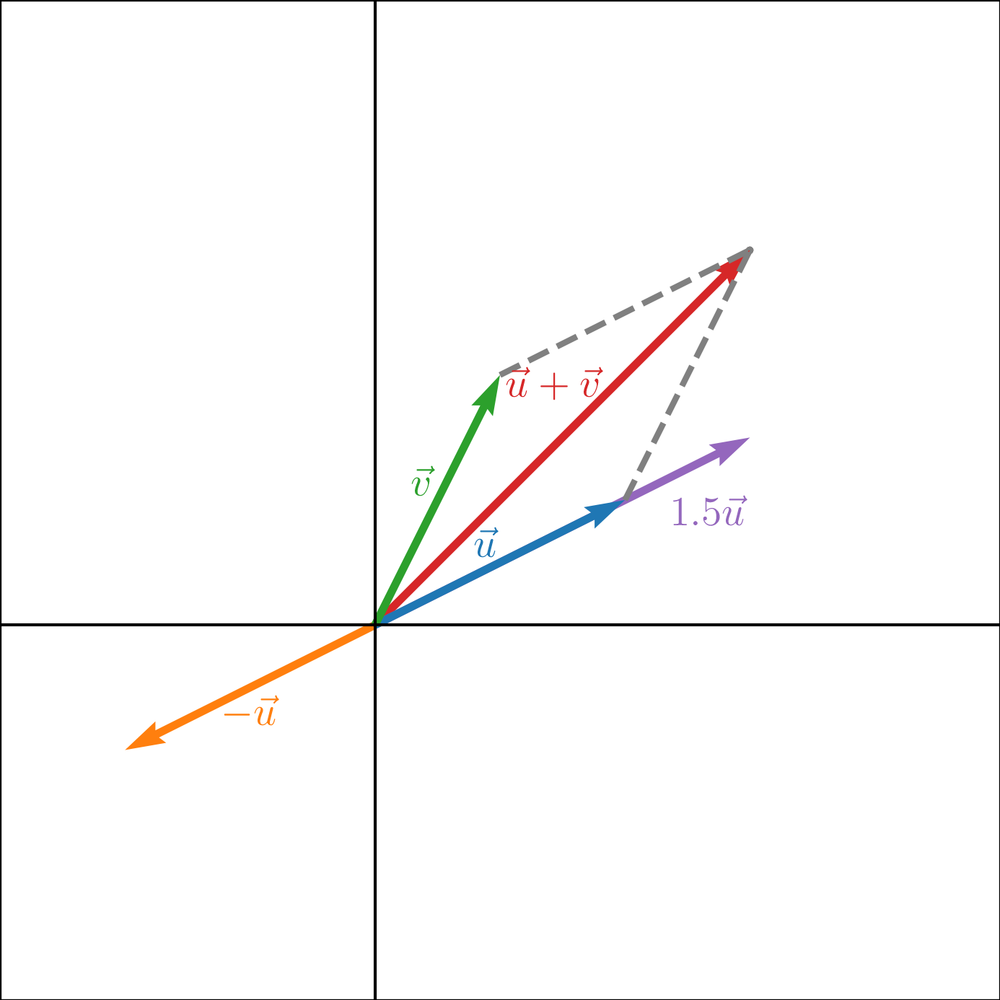
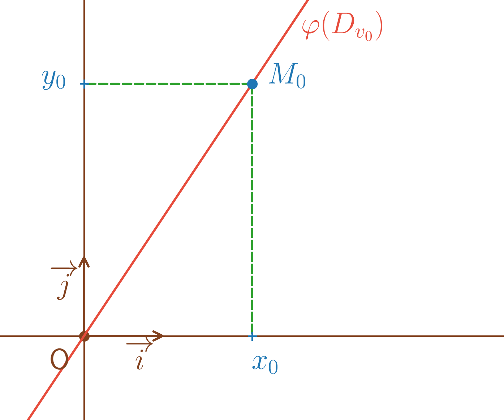
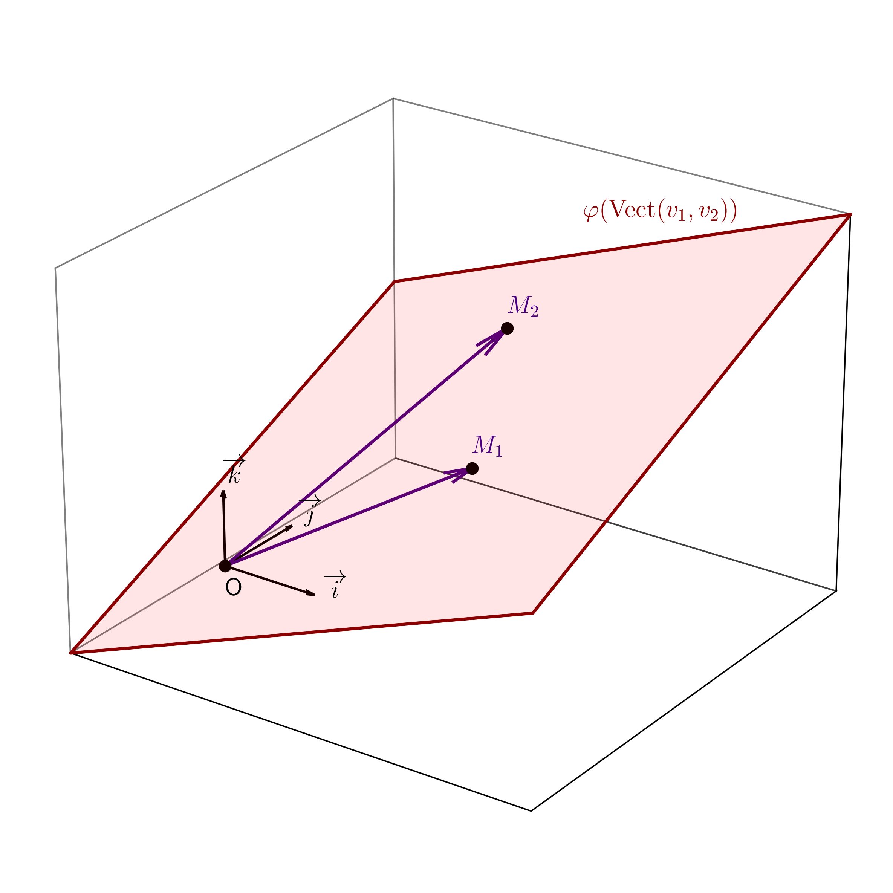
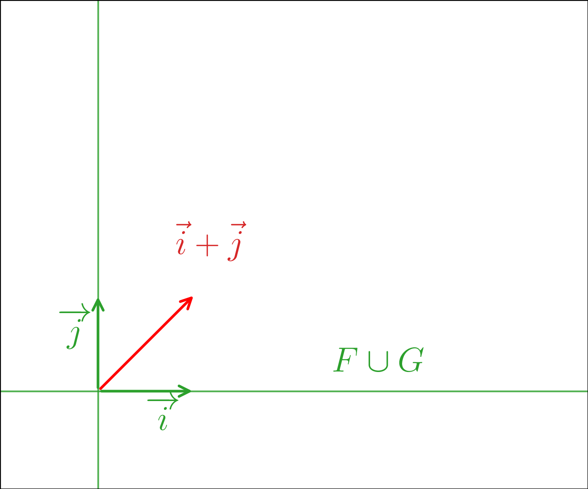
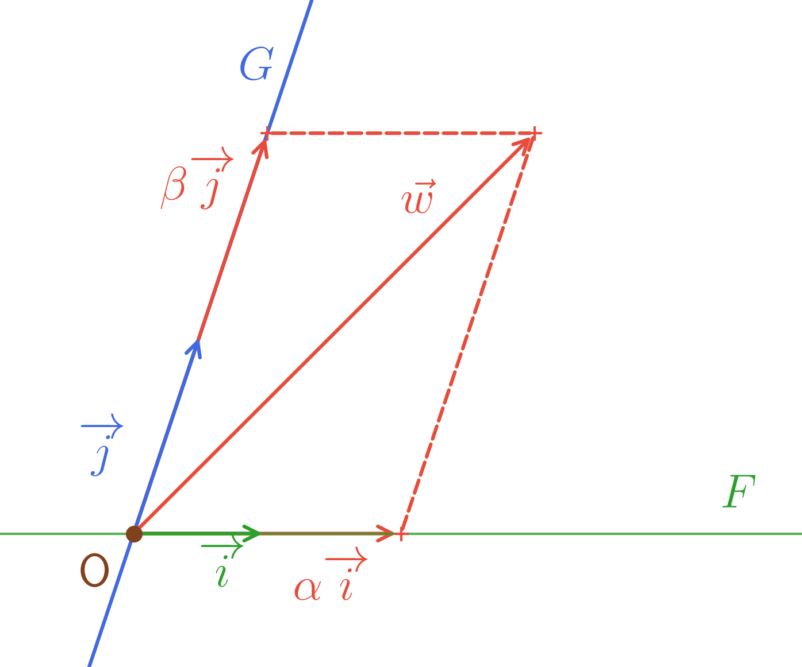
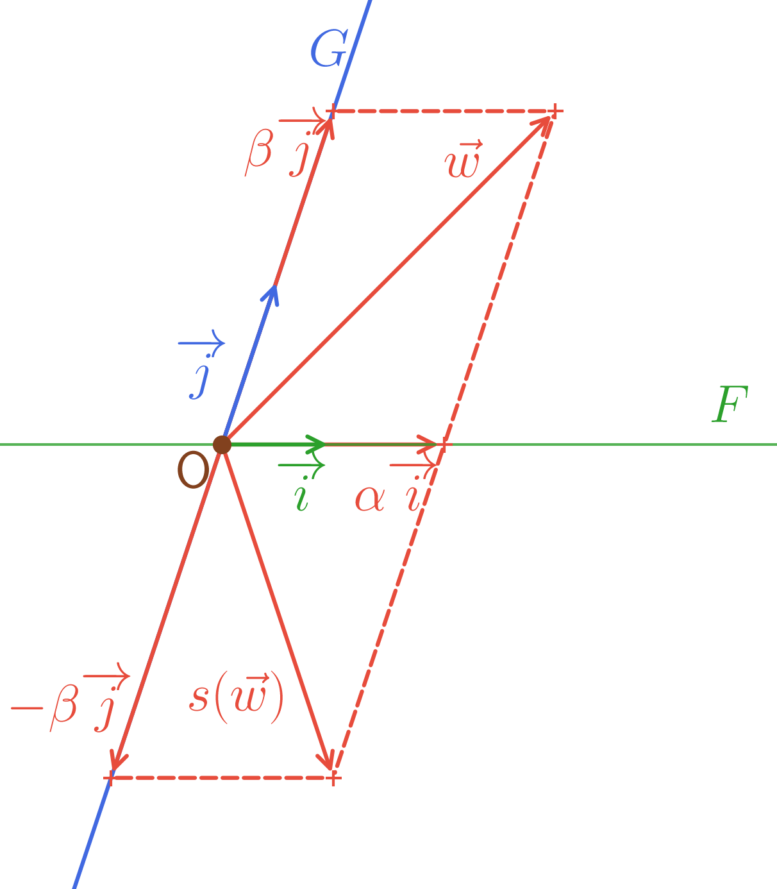

Soit \(E\) l’ensemble des vecteurs du plan ou de l’espace usuel. Remarquons quelques propriétés de \(E\).
Soient \(\overrightarrow{u},\overrightarrow{v} \in E\), on peut considérer \(\overrightarrow{u}+\overrightarrow{v}\) et il y a donc une addition \(+\) dans \(E\) \(\begin{array}{lllll} & : & E\times E & \to & E \\ & & (\overrightarrow{u},\overrightarrow{v}) & \mapsto & \overrightarrow{u}+\overrightarrow{v} \end{array}\). On peut alors montrer que \((E,+)\) est un groupe commutatif. En effet,
\(+\) est associative,
\(+\) possède un élément neutre qui est \(\overrightarrow{0}\),
Tout élément \(\overrightarrow{u}\) de \(E\) admet un élément symétrique qui est \(-\overrightarrow{u}\).
Soit \(\alpha \in \mathbb{R}\) et \(\overrightarrow{u} \in E\), on peut considérer le vecteur \(\alpha.\overrightarrow{u}\) (noté aussi \(\alpha \overrightarrow{u}\)).

On a alors les propriétés suivantes des deux opérations précédentes :
\(\forall \alpha \in \mathbb{R}, \overrightarrow{u},\overrightarrow{v} \in E\), \(\alpha(\overrightarrow{u}+\overrightarrow{v}) = \alpha\overrightarrow{u}+\alpha\overrightarrow{v}\),
\(\forall \alpha,\beta \in \mathbb{R}, \overrightarrow{u} \in E\), \((\alpha+\beta)\overrightarrow{u}= \alpha\overrightarrow{u}+\beta\overrightarrow{u}\),
\(\forall \alpha,\beta \in \mathbb{R}, \overrightarrow{u} \in E\), \(\alpha(\beta \overrightarrow{u}) = (\alpha \beta)\overrightarrow{u}\),
\(\forall \overrightarrow{u} \in E, 1\overrightarrow{u} = \overrightarrow{u}\).
Ces propriétés ressemblent à des propriétés de distributivité mais pas entre deux lois de composition internes.
Dans ce chapitre, un tel ensemble \(E\), muni de \(+\) et de \(.\) sera appelé un espace vectoriel et ne contiendra pas forcément que des vecteurs du plan ou de l’espace usuel.
Soient \(E,A\) deux ensembles non vides. Une loi de composition externe dans \(E\) à domaine d’opérations \(A\) est une fonction de \(A \times E\) dans \(E\) \(\begin{array}{lllll} L & : & A \times E & \to & E \\ & & (\alpha,x) & \mapsto & L(\alpha,x) \end{array}\).
\(L(\alpha,x)\) est en général noté \(\alpha.x\) ou plus simplement \(\alpha x\).
Soient \(E,A\) deux ensembles non vides et \(.\) une loi de composition externe dans \(E\) à domaine d’opérations \(A\).
Soit \(F \subset E\), non vide alors \(F\) est stable par \(.\) si \[\forall x \in F, \alpha \in A, \alpha.x \in F.\]
Avec \(E =\mathscr{F}(\mathbb{R},\mathbb{R})\), \(A =\mathbb{R}\) et \(.\) tel que pour tout \(f \in E, \alpha \in \mathbb{R}, x \in \mathbb{R}, (\alpha.f)(x) = \alpha x\) alors \(.\) est une loi de composition externe dans \(E\) à domaine d’opérations \(A\).
De plus, \(F = \mathscr{C}(\mathbb{R},\mathbb{R})\) est une partie stable par "\(.\)".
\(\mathbb{K}\) désigne \(\mathbb{R}\) ou \(\mathbb{C}\) dans toute la suite.
Soit \(E\) un ensemble non vide, \(+\) une loi de composition interne de \(E\) et \(.\) une loi de composition externe dans \(E\) à domaine d’opérations \(\mathbb{K}\).
La donnée \((E,+,.)\) définit un espace vectoriel sur \(\mathbb{K}\) (ou un \(\mathbb{K}\)-espace vectoriel) si
\((E,+)\) est un groupe commutatif d’élément neutre \(0_{E}\)
\(\forall \alpha \in \mathbb{K}, u,v \in E\), \(\alpha.(u+v) = \alpha.u+\alpha.v\),
\(\forall \alpha,\beta \in \mathbb{K}, u \in E\), \((\alpha+\beta).u= \alpha.u+\beta.u\),
\(\forall \alpha,\beta \in \mathbb{K}, u \in E\), \(\alpha.(\beta.u) = (\alpha\beta).u\),
\(\forall u \in E, 1.u = u\).
(Vocabulaire et notations)
Un élément de \(E\) est appelé un vecteur,
Un élément de \(\mathbb{K}\) est appelé un scalaire,
\(0_{E}\) est appelé le vecteur nul de \(E\),
Soit \(u \in E\), on note \(-u\) le symétrique de \(u\) pour \(+\),
Soient \(u,v \in E\), \(u+(-v)\) est noté \(u-v\),
Soit \(u \in E, \alpha \in \mathbb{K}\), \(\alpha.u\) est noté \(\alpha u\).
L’ensemble des vecteurs du plan ou de l’espace usuel est un \(\mathbb{R}\)-espace vectoriel.
\(E =\mathscr{F}(D,\mathbb{R})\) avec \(D\subset \mathbb{R}\) non vide est un \(\mathbb{R}\)-espace vectoriel. Le vecteur nul est la fonction nulle \(\begin{array}{lllll} 0_{E} & : & D & \to & \mathbb{R} \\ & & x & \mapsto & 0 \end{array}\) et pour \(f \in E\), \(\begin{array}{lllll} -f & : & D & \to & \mathbb{R} \\ & & x & \mapsto & -f(x) \end{array}\).
Si \(D = \mathbb{N}\) dans l’exemple précédent, l’ensemble des suites de réels indexées par \(\mathbb{N}\) est un \(\mathbb{R}\)-espace vectoriel.
\(E = \mathbb{R}\) est un \(\mathbb{R}\)-espace vectoriel.
\(E = \mathbb{C}\) est un \(\mathbb{C}\)-espace vectoriel.
\(E = \mathbb{R}^2\) est un \(\mathbb{R}\)-espace vectoriel muni de l’addition et de la loi de composition externes suivantes :
\(\forall (x,y),(x',y') \in \mathbb{R}^2, (x,y)+(x',y') = (x+x',y+y')\),
\(\forall (x,y)\in \mathbb{R}^2, \alpha \in \mathbb{R}, \alpha.(x,y) = (\alpha x, \alpha y)\).
Alors, le vecteur nul de \(\mathbb{R}^2\) est \(0_{\mathbb{R}^2} = (0,0)\) et pour \((x,y) \in \mathbb{R}^2, -(x,y) = (-x,-y)\).
Soit \((E,+_E,._E)\) un \(\mathbb{K}\)-espace vectoriel et \(n \in \mathbb{N}^{\star}\), on peut définir le \(\mathbb{K}\)-espace vectoriel \((E^n,+_{E^n},._{E^n})\) où l’addition \(+_{E^n}\) et le \(._{E^n}\) sont tels que
Pour \((x_1,\ldots,x_n), (y_1,\ldots,y_n) \in E^n\), \((x_1,\ldots,x_n)+_{E^n} (y_1,\ldots,y_n) = (x_1+_{E}y_1,\ldots,x_n+_{E}y_n)\).
Pour \((x_1,\ldots,x_n)\in E^n, \alpha \in \mathbb{K}\), \(\alpha._{E^n}(x_1,\ldots,x_n) = (\alpha._{E}x_1, \ldots, \alpha._{E}x_n)\).
On a alors \(0_{E^n} = (0_{E},\ldots,0_{E})\) et pour \((x_1,\ldots,x_n)\in E^n\), \(-_{E^n}(x_1,\ldots,x_n) = (-_Ex_1,\ldots,-_Ex_n)\). On note en général sans ambiguité, \(+\), \(.\) et \(-\) au lieu de \(+_{E^n},._{E^n},-_{E^n}, +_{E},._{E},-_E\).
Plus généralement, soient \((E,+_E,._E)\) et \((F,+_F,._F)\) deux \(\mathbb{K}\)-espaces vectoriels, on peut définir le \(\mathbb{K}\)-espace vectoriel \((E \times F,+_{E\times F},._{E\times F})\) où l’addition et le \(._{E\times F}\) sont tels que
Pour \(x,x' \in E, y,y' \in F\), \((x,y)+_{E\times F}(x',y') = (x+_Ex',y+_Fy')\).
Pour \(x \in E, y \in F, \alpha \in \mathbb{K}\), \(\alpha._{E\times F}(x,y) = (\alpha._Ex, \alpha._Fy)\).
On a alors \(0_{E \times F} = (0_{E},0_{F})\) et pour \((x,y)\in E \times F\), \(-_{E \times F}(x,y) = (-_Ex,-_Fy)\). On peut aussi généraliser à \(n\) \(\mathbb{K}\)-espace vectoriel. On note en général sans ambiguité, \(+\), \(.\) et \(-\) au lieu de \(+_{E^n},._{E^n},-_{E^n}, +_{E},._{E},-_{E^n}\)
Les propriétés suivantes, a priori évidentes, sont à prouver car elles ne sont pas incluses dans la définition d’un espace vectoriel.
Soit \(E\) un \(\mathbb{K}\)-espace vectoriel,
Pour tout \(v \in E, 0.v = 0_{E}\),
Pour tout \(v \in E\), \(\alpha \in \mathbb{K}\), \((-\alpha).v = -(\alpha.v)\).
Soit \(v \in E\), \(0.v = (0+0).v = 0.v + 0.v\) par le point 3. de la définition [def:ev]. Donc \(0.v = 0.v - 0.v = 0_E\).
Soient \(v \in E\), \(\alpha \in \mathbb{K}\),
\(0_E = 0.v = (\alpha-\alpha).v = \alpha.v + (-\alpha).v\) par le point 3. de la définition [def:ev]. Donc \((-\alpha).v = -(\alpha.v)\).
Soit \(E\) un \(\mathbb{K}\)-espace vectoriel,
Pour tout \(\alpha \in \mathbb{K}, \alpha.0_{E} = 0_{E}\),
Pour tout \(v \in E\), \(\alpha \in \mathbb{K}\), \(\alpha.(-v) = -(\alpha.v)\).
Soit \(\alpha \in \mathbb{K}\), \(\alpha.0_{E} = \alpha.(0_{E}+0_{E}) = \alpha.0_{E}+\alpha.0_{E}\) par le point 2. de la définition [def:ev]. Donc \(\alpha.0_{E} = \alpha.0_{E}+(-\alpha.0_{E}) = 0_{E}\).
Soient \(v \in E\), \(\alpha \in \mathbb{K}\), \(0_{E} = \alpha.(v-v) = \alpha.v + \alpha.(-v)\) par le point 2. de la définition [def:ev]. Donc \(\alpha.(-v) = -(\alpha.v)\).
Soient \(\alpha \in E, \alpha \in \mathbb{K}\), \[\alpha.v = 0_{E} \iff \alpha = 0 \text{ ou }v = 0_{E}.\]
\(\Longleftarrow\) a été montré par les deux propositions précédentes.
Si \(\alpha.v = 0_{E}\),
Soit \(\alpha = 0\),
Soit \(\alpha \neq 0\) et alors on peut considérer \(\frac{1}{\alpha}\).
On a donc \(\alpha.v = 0_{E} \Longrightarrow \frac{1}{\alpha}.(\alpha.v )= \frac{1}{\alpha}.0_{E} = 0_{E}\) par la proposition précédente.
De plus, par le point 4. de la définition [def:ev], \(\frac{1}{\alpha}.(\alpha.v ) = \frac{\alpha}{alpha}.v = 1.v = v\) par le point 5. de la définition [def:ev].
Donc \(v = 0_{E}\).
Soit \(E\) un \(\mathbb{K}\)-espace vectoriel et \(F \subset E\).
\(F\) est un sous-espace vectoriel de \(E\) si
\(0_E \in F\),
\(F\) est stable par \(+\), ie pour tout \(u,v \in F, u+v \in F\),
\(F\) est stable par \(.\), ie pour tout \(\alpha \in K, u \in F\), \(\alpha.u \in F\).
Comme \(F\) est stable par \(+\) et \(.\), on peut considérer les lois induites \(\begin{array}{lllll} +_F & : & F \times F & \to & F \\ & & (u,v) & \mapsto & u+v \end{array}\) et \(\begin{array}{lllll} ._F & : & \mathbb{K}\times F & \to & F \\ & & (\alpha,v) & \mapsto & \alpha.v \end{array}\) et \((F,+_F,._F)\) est un \(\mathbb{K}\)-espace vectoriel.
Soit \(E\) un \(\mathbb{K}\)-espace vectoriel et \(F \subset E\).
\(F\) est un sous-espace vectoriel de \(E\) \(\iff\) \(\begin{cases} & 0_E \in F\\ & \forall u,v \in F, \lambda \in \mathbb{K}, u+\lambda.v \in F \end{cases}\).
\((\Longrightarrow)\) Soit \(F\) un sous-espace vectoriel de \(E\), \(0_E \in F\). De plus, soient \(u,v \in E, \lambda \in \mathbb{K}\), \(F\) est stable par \(.\) donc \(\lambda.v \in F\) et \(F\) stable par \(+\) donc \(u+\lambda.v \in F\).
\((\Longleftarrow)\) Soit \(F \subset E\) tel que \(\begin{cases} & 0_E \in F\\ & \forall u,v \in F, \lambda \in \mathbb{K}, u+\lambda.v \in F \end{cases}\).
Alors,
\(0_{E} \in F\),
Pour \(u,v \in F\), avec \(\lambda = 1\), \(u+1.v = u+v \in F\),
Pour \(v \in F, \alpha \in \mathbb{K}\), avec \(u = 0_{E}\), \(u+\alpha.v = \alpha.v \in F\).
Soit \(E\) un espace-vectoriel, et \(a \in E\) \(F = \left\{a\right\}\) est un sous-espace vectoriel de \(E\) si et seulement si \(a = 0_{E}\).
Soit \(v_0 \in E\) et \(D_{v_0} = \left\{\alpha v_0 / \alpha \in \mathbb{K}\right\}\), \(D_{v_0}\) est un sous-espace vectoriel de \(E\).
D’abord, comme \(E\) est un espace vectoriel, \(D_{v_0} \subset E\). De plus,
\(0_{E} = 0.v_0 \in D_{v_0}\),
Soient \(u,v \in D_{v_0}\), il existe \(\alpha_u,\alpha_v \in \mathbb{K}\) tels que \(u = \alpha_u u\) et \(v = \alpha_v v\). De plus, soit \(\lambda \in \mathbb{K}\), \(u+\lambda v = (\alpha_u + \lambda \alpha_v).v_0 \in D_{v_0}\).
Soit \(E\) un espace-vectoriel et soient \(v_0,v \in E\). S’il existe \(\alpha \in \mathbb{K}\) tel que \(v = \lambda v_0\), on dit que \(v\) est colinéaire à \(v_0\).
Définissons \(D_{v_0} = \left\{\alpha v_0 / \alpha \in \mathbb{K}\right\}\) qui est un sous-espace vectoriel de \(E\) comme montré dans l’exemple précédent.
Si \(v_0 = 0_{E}, D_{v_0} = \left\{0_{E}\right\}\),
Si \(v_0 \neq 0_{E}, D_{v_0}\) est appelé la droite vectorielle de \(E\) engendrée par \(v_0\).
Si \(E = \mathbb{R}^2\) et \(v_0 = (x_0,y_0) \neq (0,0) \in E\).
Soit \((O,\overrightarrow{i},\overrightarrow{j})\) repère orthonormé du plan \(\mathscr{P}\), on considère \(\begin{array}{lllll} \varphi & : & E & \to & \mathscr{P} \\ & & (x,y) & \mapsto & M(x,y) \end{array}\).
Alors, de nouveau avec \(D_{v_0} = \left\{\alpha v_0 / \alpha \in \mathbb{K}\right\}\) et en notant \(M_0 = \varphi(v_0)\),
\[\begin{aligned} &M \in \varphi(D_{v_0}) \\ & \iff \exists (x,y) \in D_{v_0} / M = \varphi(x,y) \\ & \iff \exists \alpha \in \mathbb{R}/ M = (\alpha x_0, \alpha y_0) \\ & \iff \exists \alpha \in \mathbb{R}/ \overrightarrow{OM} = \alpha\overrightarrow{OM_0}. \end{aligned}\]
Donc \(\varphi(D_{v_0}) = \left\{M / \overrightarrow{OM} = \alpha\overrightarrow{OM_0} \text{ avec }\alpha \in \mathbb{R}\right\}\) qui est la droite de \(\mathscr{P}\) passant par \(O\) et \(M_0\).

Soit \(E =\mathscr{F}(I,\mathbb{R})\) avec \(I\) intervalle de \(\mathbb{R}\) et \(a : I \to \mathbb{R}\) une fonction continue. On considère \(\mathcal{S}_{(H)}\) l’ensemble des solutions sur \(I\) de l’équation différentielle homogène \[y'(t) = a(t)y(t). \tag{H}\]
Alors, \(\mathcal{S}_{(H)} = \left\{t \in I \mapsto C e^{A(t)} / C \in \mathbb{R}\right\}\), avec \(A\) une primitive de \(a\) sur \(I\), est la droite vectorielle de \(\mathscr{F}(I,\mathbb{R})\), dirigée par \(t \in I \mapsto e^{A(t)}\).
Soient \(E\) un espace vectoriel et \(F,G\) deux sous-espaces vectoriels de \(E\).
Alors \(F \cap G\) est un sous-espace vectoriel de \(E\).
Comme \(F\) et \(G\) sont des sous-espaces vectoriels de \(E\), \(0_{E} \in F\) et \(0_{E} \in G\) donc \(0_{E} \in F \cap G\).
Soient \(u,v \in F \cap G\) et \(\lambda \in \mathbb{K}\).
Alors, \(u,v \in F\) donc \(u+\lambda v \in F\) car \(F\) sous-espace vectoriel de \(E\).
De plus, \(u,v \in G\) donc \(u+\lambda v \in G\) car \(G\) sous-espace vectoriel de \(E\).
Donc \(u+\lambda v \in F \cap G\).
On peut montrer par récurrence : soient \(E\) un espace vectoriel, \(n \in \mathbb{N}^{\star}\) et \(F_1,\ldots,F_n\) sous-espaces vectoriels de \(E\) alors \(\bigcap_{i=1}^n F_i\) est un sous-espace vectoriel de \(E\).
Soient \(E\) un \(\mathbb{K}\)-espace vectoriel et \(v_1,\ldots,v_n \in E\) (avec \(n \in \mathbb{N}^{\star}\)), on cherche le plus petit sous-espace vectoriel de \(E\) qui contient \(v_1,\ldots,v_n\).
Soit \(G\) un sous-espace vectoriel de \(E\) qui contient \(v_1,\ldots,v_n\).
\(v_1,\ldots,v_n \in G\).
De plus, en tant que sous-espace vectoriel de \(E\), \(G\) est stable par \(+\) donc pour tout \(i \in [\![ 1,n ]\!]\), pour tout \(\alpha_i \in \mathbb{K}\), \(\alpha_i v_i \in G\).
Enfin, en tant que sous-espace vectoriel de \(E\), \(G\) est stable par \(+\) donc pour tout \(\alpha_1,\ldots,\alpha_n \in K\), \(\sum_{i=1}^n \alpha_i v_i = \alpha_1 v_1 +\ldots+\alpha_n v_n \in G\).
On en déduit que \(\left\{\sum_{i=1}^n \alpha_i v_i / \forall 1 \leq i \leq n, \alpha_i \in \mathbb{K}\right\} =\left\{\alpha_1 v_1 +\ldots+\alpha_n v_n / \alpha_1,\ldots,\alpha_n \in \mathbb{K}\right\} \subset G\). On a en fait la proposition suivante.
Soient \(E\) un \(\mathbb{K}\)-espace vectoriel et \(v_1,\ldots,v_n \in E\) (avec \(n \in \mathbb{N}^{\star}\)).
On note \(\mathop{\mathrm{Vect}}(v_1,\ldots,v_n)\) le plus petit sous-espace vectoriel de \(E\) contenant \(v_1,\ldots,v_n\). On l’appelle le sous-espace vectoriel de \(E\) engendré par \(v_1,\ldots,v_n\). On a alors \[\mathop{\mathrm{Vect}}(v_1,\ldots,v_n) = \left\{\sum_{i=1}^n \alpha_i v_i / \forall 1 \leq i \leq n, \alpha_i \in \mathbb{K}\right\} =\left\{\alpha_1 v_1 +\ldots+\alpha_n v_n / \alpha_1,\ldots,\alpha_n \in \mathbb{K}\right\}\].
D’après l’introduction, il suffit de montrer que \(F = \left\{\alpha_1 v_1 +\ldots+\alpha_n v_n / \alpha_1,\ldots,\alpha_n \in \mathbb{K}\right\}\) est bien un sous-espace vectoriel de \(E\).
Car alors, si \(G\) est un sous-espace vectoriel de \(E\) contenant \(v_1,\ldots,v_n\), par l’introduction, on a \(F \subset G\) et donc \(F\) est bien le plus petit sous-espace vectoriel de \(E\) contenant \(v_1,\ldots,v_n\).
\(0_{E} = \sum_{i=1}^n 0 v_i \in F\),
Soient \(\lambda \in \mathbb{K}\) et \(u,w \in F\).
Il existe \(\alpha_1,\ldots,\alpha_n \in \mathbb{K}\) et \(\beta_1,\ldots,\beta_n \in \mathbb{K}\) tels que \(u = \sum_{i=1}^n \alpha_i v_i\) et \(w = \sum_{i=1}^n \beta_i v_i\).
On a donc \(u+\lambda w = \sum_{i=1}^n (\alpha_i + \lambda\beta_i)v_i \in F\).
Donc \(F\) est un sous-espace vectoriel de \(E\) et \(\mathop{\mathrm{Vect}}(v_1,\ldots,v_n) = F\).
\(\sum_{i=1}^n \alpha_i v_i\) est appelé une combinaison linéaire des vecteurs \(v_i\).
Si \(n = 1\) et \(v_1 \neq 0_{E}\), \(\mathop{\mathrm{Vect}}(v_1)\) est la droite vectorielle engendrée par \(v_1\).
Si \(n=2\),
Si \(v_1 \neq 0_{E} \text{ et }v_2\) est colinéaire à \(v_1\), \(\mathop{\mathrm{Vect}}(v_1,v_2) = \mathop{\mathrm{Vect}}(v_1)\) est la droite engendrée par \(v_1\).
\(\mathop{\mathrm{Vect}}(v_1,v_2) \supset \mathop{\mathrm{Vect}}(v_1)\) car \(v_1 \in \mathop{\mathrm{Vect}}(v_1,v_2)\) et \(\mathop{\mathrm{Vect}}(v_1)\) est le plus petit sous-espace vectoriel de \(E\) contenant \(v_1\).
\(\mathop{\mathrm{Vect}}(v_1,v_2) \subset \mathop{\mathrm{Vect}}(v_1)\) car \(v_2\) est colinéaire à \(v_1\) donc il existe \(\lambda \in \mathbb{K}\) tel que \(v_2 = \lambda v_1\).
On en déduit \(\mathop{\mathrm{Vect}}(v_1,v_2) = \left\{ (\alpha_1+\lambda \alpha_2)v_1 / \alpha_1,\alpha_2 \in \mathbb{K}\right\} \subset \mathop{\mathrm{Vect}}(v_1)\).
Si \(v_1 \neq 0_{E} \text{ et }v_2\) n’est pas colinéaire à \(v_1\), \(\mathop{\mathrm{Vect}}(v_1,v_2)\) est appelé le plan engendré par \(v_1\) et \(v_2\).
Illustrons la notion de plan précédente. Si \(E = \mathbb{R}^3\), soient \(v_1 = (x_1,y_1,z_1) \neq (0,0)\) et \(v_2 = (x_2,y_2,z_2)\) non colinéaire à \(v_1\).
Soit \((O,\overrightarrow{i},\overrightarrow{j},\overrightarrow{k})\) repère orthonormé de l’espace usuel \(\mathscr{E}\), on considère \(\begin{array}{lllll} \varphi & : & E & \to & \mathscr{E} \\ & & (x,y,z) & \mapsto & M(x,y,z) \end{array}\).
Alors, de nouveau avec en notant \(M_1 = \varphi(v_1) \text{ et }M_2 = \varphi(v_2)\),
\[\begin{aligned} & \qquad \\ & \qquad \\ &M \in \varphi(\mathop{\mathrm{Vect}}(v_1,v_2)) \\ & \iff \exists (x,y,z) \in \mathop{\mathrm{Vect}}(v_1,v_2) / M = \varphi(x,y,z) \\ & \iff \exists \alpha_1,\alpha_2 \in \mathbb{R}/ M = (\alpha_1 x_1+\alpha_2 x_2, \alpha_1 y_1+\alpha_2 y_2,\alpha_1 z_1+\alpha_2 z_2) \\ & \iff \overrightarrow{OM} = \alpha_1 \overrightarrow{OM_1} +\alpha_2 \overrightarrow{OM_2}. \end{aligned}\]
Donc \(\varphi(\mathop{\mathrm{Vect}}(v_1,v_2)) = \left\{M / \overrightarrow{OM} = \alpha_1 \overrightarrow{OM_1} +\alpha_2 \overrightarrow{OM_2} \text{ avec }\alpha_1,\alpha_2 \in \mathbb{R}\right\}\) qui est le plan de \(\mathscr{P}\) passant par \(O\), \(M_1\) et \(M_2\).

Soient \(E\) un \(\mathbb{K}\)-espace vectoriel et \(F,G\) deux sous-espaces vectoriels de \(E\), on cherche le plus petit sous-espace vectoriel de \(E\) qui contient \(F\) et \(G\). Une piste envisageable est \(F \cup G\). On a bien \(0_{E} \in F\cup G\). De plus, si \(u \in F \cup G\), si \(u \in F\) donc pour tout \(\alpha \in \mathbb{K}\), \(\alpha u \in F \subset F \cup G\) et de même si \(u \in G\). En revanche, montrons sur un exemple qu’on a en général pas la stabilité par ".".
Si \(E = \mathbb{R}^2\), \({i} = (1,0)\) et \({j} = (0,1)\). Considérons \(F = \mathop{\mathrm{Vect}}({i})\) et \(G = \mathop{\mathrm{Vect}}({j})\), alors \(F \cup G\) n’est pas stable par \(+\).
En particulier, \(\underbrace{{i}}_{ \in F \subset F\cup G} + \underbrace{{j}}_{ \in G \subset F\cup G} \notin F \cup G\) comme l’illustre le dessin ci-contre, représentant \(\mathbb{R}^2\) dans le plan.

Poursuivons donc la recherche. soit \(H\) un sous-espace vectoriel de \(E\) qui qui contient \(F\) et \(G\).
\(F \subset H \text{ et }G \subset H\).
De plus, en tant que sous-espace vectoriel de \(E\), \(G\) est stable par \(+\) donc pour tout \(u \in F, v \in G\), \(u+v \in H\).
On en déduit que \(\left\{u+v / u \in F, v \in G\right\} \subset H\). On a en fait la proposition suivante.
Soient \(E\) un \(\mathbb{K}\)-espace vectoriel et \(F,G\) deux sous-espaces vectoriels de \(E\).
On définit le plus petit sous-espace vectoriel de \(E\) contenant \(F\) et \(G\), noté \(F+G\) par \[F+G = \left\{u+v / u \in F, v \in G\right\}.\]
On dit que \(F+G\) est le sous-espace vectoriel somme de \(F\) et \(G\) (ou plus simplement la somme de \(F\) et \(G\)).
D’après l’introduction, il suffit de montrer que \(\left\{u+v / u \in F, v \in G\right\}\) est bien un sous-espace vectoriel de \(E\).
Car alors, si \(H\) est un sous-espace vectoriel de \(E\) contenant \(F\) et \(G\), par l’introduction, on a \(\left\{u+v / u \in F, v \in G\right\} \subset H\) et donc \(\left\{u+v / u \in F, v \in G\right\}\) est bien le plus petit sous-espace vectoriel de \(E\) contenant \(F\) et \(G\).
\(0_{E} = \underbrace{0_{E}}_{\in F}+\underbrace{0_{E}}_{\in G} \in \left\{u+v / u \in F, v \in G\right\}\),
Soient \(\lambda \in \mathbb{K}\) et \(u,w \in \left\{u+v / u \in F, v \in G\right\}\).
Il existe \(u_1,u_2 \in F\) et \(v_1,v_2 \in G\) tels que \(u = u_1+u_2\) et \(v = v_1+v_2\).
On a donc \(u+\lambda v= \underbrace{u_1 + \lambda u_2}_{\in F} + \underbrace{v_1 + \lambda v_2}_{\in G} \in\left\{u+v / u \in F, v \in G\right\}\).
Donc \(\left\{u+v / u \in F, v \in G\right\}\) est un sous-espace vectoriel de \(E\) et \(F+G = \left\{u+v / u \in F, v \in G\right\}\).
Plus généralement, soient \(E\) un \(\mathbb{K}\)-espace vectoriel et \(F_1,\ldots,F_n\) sous-espaces vectoriels de \(E\) (\(n \in \mathbb{N}, n \geq 2\)).
On définit le plus petit sous-espace vectoriel de \(E\) contenant \(F_1,\ldots,F_n\), noté \(F_1 + \ldots + F_n\) par \[F_1 + \ldots + F_n = \left\{\sum_{i=1}^n u_i / \forall i \in [\![ 1, n]\!], u_i \in F_i\right\}.\]
On dit que \(F_1 + \ldots + F_n\) est le sous-espace vectoriel somme de \(F_1,\ldots,F_n\) (ou plus simplement la somme de \(F_1,\ldots,F_n\)).
Reprenons l’exemple d’introduction : Si \(E = \mathbb{R}^2\), \({i} = (1,0)\) et \({j} = (0,1)\). Considérons \(F = \mathop{\mathrm{Vect}}({i})\) et \(G = \mathop{\mathrm{Vect}}({j})\).
Alors, \(F+G = \left\{u+v / u \in F, v \in G\right\} = \left\{\alpha{i}+\beta{j} / \alpha, \beta \in \mathbb{R}\right\} = \left\{(\alpha,\beta)/ \alpha, \beta \in \mathbb{R}\right\} = \mathbb{R}^2\).
Si \(E = \mathbb{R}^4\), \(\begin{cases} v_1 & = (1,-1,0,0) \\ v_2 & = (0,0,1,0) \\ v_3 & = (0,0,0,1) \\ v_4 & = (-1,1,0,2). \end{cases}, F = \mathop{\mathrm{Vect}}\left(v_1,v_2\right), G = \mathop{\mathrm{Vect}}\left(v_3,v_4\right)\).
On a \[F = \left\{\alpha_1v_1+\alpha_2v_2 = (\alpha_1,-\alpha_1,\alpha_2,0) / \alpha_1,\alpha_2 \in \mathbb{R}\right\}\] et \[G = \left\{\alpha_3v_3+\alpha_4v_4 = (-\alpha_4,\alpha_4,0,\alpha_3+2\alpha_4) / \alpha_3,\alpha_4 \in \mathbb{R}\right\}.\]
Donc \[F+G = \left\{\sum_{i=1}^4 \alpha_i v_i = (\alpha_1-\alpha_4,\alpha_4-\alpha_1,\alpha_2,\alpha_3+2\alpha_4)/ \alpha_1,\alpha_2,\alpha_3,\alpha_4 \in \mathbb{R}\right\}\]
Montrons que \(F+G = H\) avec \(H:=\left\{(x,-x,y,z) \ x,y,z \in \mathbb{R}\right\}\).
\(F+G \subset H\) Si \(u \in F+G\), il existe \(\alpha_1,\alpha_2,\alpha_3,\alpha_4 \in \mathbb{R}\) tel que \(u = (\alpha_1-\alpha_4,\alpha_4-\alpha_1,\alpha_2,\alpha_3+2\alpha_4)\).
Donc avec \(x = \alpha_1-\alpha_4, y = \alpha_2, z = \alpha_3+2\alpha_4\), \(u = (x,-x,y,z) \in H\).
\(F+G \supset H\) Si \(u \in H\), il existe \(x,y,z \in \mathbb{R}\) tel que \(u = (x,-x,y,z)\).
De plus, soient \(\alpha_1,\alpha_2,\alpha_3,\alpha_4 \in \mathbb{R}\),
\[\begin{aligned} u = (\alpha_1-\alpha_4,\alpha_4-\alpha_1,\alpha_2,\alpha_3+2\alpha_4) & \iff \begin{cases} x & = \alpha_1-\alpha_4 \\ -x & = \alpha_4-\alpha_1 \\ y& =\alpha_2 \\ z & = \alpha_3+2\alpha_4 \end{cases} \\ & \iff \begin{cases} \alpha_4 & = \alpha_1-x \\ \alpha_2 & = y \\ \alpha_3 & = z-2\alpha_4 \end{cases} \\ & \iff \begin{cases} \alpha_4 & = \alpha_1-x \\ \alpha_2 & = y \\ \alpha_3 & = z-2\alpha_1-2x \end{cases} \\ \end{aligned}\]
Donc avec \(\alpha_1 = 0, \alpha_2 = y, \alpha_3 = z-2x, \alpha_4 = -x\), \(u = (\alpha_1-\alpha_4,\alpha_4-\alpha_1,\alpha_2,\alpha_3+2\alpha_4) \in F+G\).
On en déduit aussi donc
\(F+G = \left\{x(1,-1,0,0)+y(0,0,1,0)+z(0,0,0,1) / x,y,z \in \mathbb{R}\right\} = \mathop{\mathrm{Vect}}((1,-1,0,0),(0,0,1,0),(0,0,0,1))\).
Soient \(E\) un espace vectoriel et \(F,G\) deux sous-espaces vectoriels de \(E\).
\(F+G\) est directe si pour tout \(w \in F+G\), il existe \(u \in F\) et \(v \in G\) uniques tels que \(w = u+v\).
On note alors la somme \(F\oplus G\).
\(E = \mathbb{R}^2\), \(F = \mathop{\mathrm{Vect}}\left((1,0)\right), G = \mathop{\mathrm{Vect}}\left((1,2)\right)\).
Alors, \(F+G = \left\{\alpha(1,0)+\beta(1,2) = (\alpha+\beta,2\beta)/\alpha,\beta \in \mathbb{R}\right\}\). Montrons que cette somme est directe.
Soit \(u \in F+G\), supposons qu’il existe \(\alpha,\beta \in \mathbb{R}\) tels que \(u = (\alpha+\beta,2\beta)\) et \(\alpha',\beta' \in \mathbb{R}\) tels que \(u = (\alpha'+\beta',2\beta')\).
On a donc \(\begin{cases} \alpha+\beta & = \alpha'+\beta'\\ 2\beta & = 2\beta' \end{cases} \Longrightarrow \begin{cases} \alpha+\beta & = \alpha'+\beta'\\ \beta & = \beta' \end{cases} \Longrightarrow \begin{cases} \alpha & = \alpha'\\ \beta & = \beta' \end{cases}\).
On en déduit que \(F+G\) est directe et \(F\oplus G = \left\{(\alpha+\beta,2\beta)/\alpha,\beta \in \mathbb{R}\right\}\)
\(E=\mathbb{R}^3\), \(\begin{cases} v_1 & = (0,1,-1) \\ v_2 & = (1,0,1) \\ v_3 & = (1,1,0) \\ v_4 & = (0,0,1) \end{cases}\) ,\(F = \mathop{\mathrm{Vect}}(v_1,v_2)\) et \(G = \mathop{\mathrm{Vect}}(v_3,v_4)\).
Alors, \(v_3 = \underbrace{0_{E}}_{\in F} + \underbrace{v_3}_{\in G} = \underbrace{v_1+v_2}_{\in F} + \underbrace{0_{E}}_{\in G}\).
Donc \(F+G\) n’est pas directe.
Soient \(E\) un espace vectoriel et \(F,G\) deux sous-espaces vectoriels de \(E\).
\[F+G \text{ directe } \iff F \cap G = \left\{0_{E}\right\}.\]
\((\Longrightarrow)\) Si \(F+G\) est directe, soit \(u \in F \cap G\) alors \(u \in F\) et \(u\in G\) donc \(u = \underbrace{u}_{\in F} + \underbrace{0_{E}}_{\in G} = \underbrace{0_{E}}_{\in F} + \underbrace{u}_{\in G}\).
Par unicité de la décomposition de \(u\), \(u = 0_{E}\) donc \(F \cap G \subset \left\{0_{E}\right\}\).
De plus, comme \(F \cap G\) est un sous-espace vectoriel de \(E\), \(F \cap G \supset \left\{0_{E}\right\}\).
\((\Longleftarrow)\) Si \(F \cap G = \left\{0_{E}\right\}\), soit \(w \in F+G\) tel que \(w = \underbrace{u}_{\in F} + \underbrace{v}_{\in G} = \underbrace{u'}_{\in F} + \underbrace{v'}_{\in G}\).
Alors, \(u+v = u'+v' \iff \underbrace{u-u'}_{\in F} = \underbrace{v'-v}_{\in G}\) donc \(u-u' \in F\cap G\) et \(v'-v \in F \cap G\). Donc \(\begin{cases} u-u' & = 0_{E} \\ v'-v & = 0_{E} \end{cases} \iff \begin{cases} u &=u' \\ v &=v' \end{cases}.\)
On étend la définition précédente : Soient \(E\) un espace vectoriel et \(F_1,\ldots,F_n\) sous-espaces vectoriels de \(E\) (\(n \in \mathbb{N}, n \geq 2\)).
\(F_1 +\ldots +F_n\) est directe si pour tout \(w \in F_1 +\ldots +F_n\), il existe \(u_i \in F_i\) pour \(1 \leq i \leq n\) uniques tels que \(w = \sum_{i=1}^n u_i\).
On note alors la somme \(F_1 \oplus \ldots \oplus F_n\) ou \(\bigoplus_{i=1}^n F_i\).
Soient \(E\) un espace vectoriel et \(F_1,\ldots,F_n\) sous-espaces vectoriels de \(E\) (\(n \in \mathbb{N}, n \geq 2\)).
\[F_1 +\ldots +F_n \text{ directe } \iff \left(0_{E} = \sum_{i=1}^n u_i \text{ avec }\forall i \in [\![1, n]\!], u_i\in F_i \Longrightarrow \forall i \in [\![1, n]\!], u_i = 0_{E}\right).\]
\((\Longrightarrow)\) Si \(F_1 +\ldots +F_n\) est directe, \(0_E = \underbrace{0_E}_{\in F_1}+\ldots+\underbrace{0_E}_{\in F_n}\) est l’unique décomposition de \(0_E\).
\((\Longleftarrow)\) Soit \(w \in F_1 +\ldots +F_n\) tel que \(w = \sum_{i=1}^n \underbrace{u_i}_{\in F_i} = \sum_{i=1}^n \underbrace{v_i}_{\in F_i}\)
alors \(\sum_{i=1}^n \underbrace{u_i}_{\in F_i} = \sum_{i=1}^n \underbrace{v_i}_{\in F_i} \Longrightarrow \sum_{i=1}^n \underbrace{u_i-v_i}_{\in F_i} = 0_E \Longrightarrow \forall i \in [\![1, n]\!], u_i-v_i = 0 \iff u_i = v_i\).
Si, en cherchant à étendre la proposition [prop:CNS_Somme_directe], pour tout \(i \neq j\), \(F_i \subset F_j = \left\{0_{E}\right\}\), la somme \(F_1 +\ldots +F_n\) n’est pas directe en général.
Dans \(\mathbb{R}^2\), posons \(F_1=\mathop{\mathrm{Vect}}((1,0)), F_2=\mathop{\mathrm{Vect}}((0,1)), F_3=\mathop{\mathrm{Vect}}((1,1)).\)
On a \(F_1\cap F_2=F_1\cap F_3=F_2\cap F_3=\{0\}.\)
Cependant la somme n’est pas directe car \((1,0)+(0,1)-(1,1)=(0,0)\) avec \((1,0)\in F_1\), \((0,1)\in F_2\) et \((1,1)\in F_3\).
Soient \(E\) un espace vectoriel et \(F,G\) deux sous-espaces vectoriels de \(E\).
On dit que \(F\) et \(G\) sont supplémentaires de \(E\) si \(E = F\oplus G\).
C’est-à-dire si pour tout \(w \in E\), il existe \(u \in F\) et \(v \in G\) uniques tels que \(w = u+v\).
Si \(E = \mathbb{R}^2, F = \mathop{\mathrm{Vect}}(1,1), G = \mathop{\mathrm{Vect}}(0,3)\) alors \(E = F\oplus G\).
Soit \((x,y) \in \mathbb{R}^2\), on cherche \(\alpha, \beta\) tels que \(x,y = \alpha(1,1) + \beta(0,3) = (\alpha,\alpha+3\beta)\).
On a alors \[\begin{cases} \alpha & = x \\ \alpha + 3 \beta & = y \end{cases} \iff \begin{cases} \alpha & = x \\ \beta & = \frac{y-x}{3} \end{cases}\] donc de tels \(\alpha,\beta\) existent et sont uniques donc \(E = F\oplus G\).
Si \(E = \mathbb{R}^3\), \(\begin{cases} v_1 & = (1,0,-1) \\ v_2 & = (0,0,1) \\ v_3 & = (1,0,0) \\ v_4 & = (-1,0,2). \end{cases}, F = \mathop{\mathrm{Vect}}\left(v_1,v_2\right), G = \mathop{\mathrm{Vect}}\left(v_3,v_4\right)\), \(v_4 = v_2-v_1 = v_4\) donc la somme n’est même pas directe.
Exercice — Dans \(E = \mathscr{F}(\mathbb{R},\mathbb{R})\), on pose \(P = \left\{f \in E / f\text{ paire}\right\}\) et \(I \left\{g \in E / g\text{ impaire}\right\}\).
Montrer que \(P\) et \(I\) sont des sous-espaces vectoriels de \(E\).
Montrer que \(E = P \oplus I\).
Corrigé —
Montrons que \(P\) est un sous-espace vectoriel de \(E\).
La fonction nulle est paire donc \(0_{\mathscr{F}(\mathbb{R},\mathbb{R})} \in P\).
Soient \(f_1,f_2 \in P\), \(\alpha \in \mathbb{R}\), pour tout \(x \in \mathbb{R}\), \((\alpha f_1+f_2)(-x) = \alpha f_1(-x) + f_2(-x) = \alpha f_1(x) + f_2(x) = (\alpha f_1+f_2)(x)\). Donc \(\alpha f_1+f_2 \in P\).
Montrons que \(I\) est un sous-espace vectoriel de \(E\).
La fonction nulle est impaire donc \(0_{\mathscr{F}(\mathbb{R},\mathbb{R})} \in I\).
Soient \(f_1,f_2 \in I\), \(\alpha \in \mathbb{R}\), pour tout \(x \in \mathbb{R}\), \((\alpha f_1+f_2)(-x) = \alpha f_1(-x) + f_2(-x) = -\alpha f_1(x) - f_2(x) = -(\alpha f_1+f_2)(x)\). Donc \(\alpha f_1+f_2 \in I\).
Soit \(h \in E\), on cherche \(f \in P,g \in I\) uniques tels que \(h = f+g\). Procédons par analyse-synthèse.
Si \(h = f+g\) avec \(f \in P,g \in I\) alors pour \(x \in \mathbb{R}\),
\[\begin{aligned} \begin{cases} h(x) & = f(x)+g(x) \\ h(-x) & = f(-x)+g(-x) = f(x)-g(x) \\ \end{cases} &\Longrightarrow \begin{cases} h(x)+h(-x) & = 2f(x) \\ h(x)-h(-x) & = 2g(x) \\ \end{cases} \\ & \Longrightarrow \begin{cases} f(x) & = \frac{h(x)+h(-x)}{2} \\ g(x) & = \frac{h(x)-h(-x)}{2}. \end{cases} \end{aligned}\] Donc \(f\) et \(g\) sont uniques.
Vérifions que \(f,g\) tels que pour tout \(x \in \mathbb{R}\), \(\begin{cases} f(x) & = \frac{h(x)+h(-x)}{2} \\ g(x) & = \frac{h(x)-h(-x)}{2}. \end{cases}\) conviennent.
Pour \(x \in \mathbb{R}\), \(f(-x) = \frac{h(-x)+h(-(-x))}{2} = \frac{h(-x)+h(x)}{2} = f(x)\) donc \(f \in P\) et \(g(-x) = \frac{h(-x)-h(-(-x))}{2} = \frac{h(-x)-h(x)}{2} =-g(x)\) donc \(g \in I\).
Pour \(f = \exp\), \(f = \mathop{\mathrm{ch}}\) et \(g = \mathop{\mathrm{sh}}\).
On étend la définition précédente : Soient \(E\) un espace vectoriel et \(F_1,\ldots,F_n\) sous-espaces vectoriels de \(E\) (\(n \in \mathbb{N}, n \geq 2\)).
\(F_1,\ldots,F_n\) sont supplémentaires dans \(E\) si \(E = \bigoplus_{i=1}^n F_i\).
Soient \(E,F\) deux \(\mathbb{K}\)-espaces vectoriels et \(f \in \mathscr{F}(E,F)\). \(f\) est linéaire si
\(\forall u,v \in E\), \(f(u+v) = f(u)+f(v)\),
\(\forall u \in E, \alpha \in \mathbb{K}\), \(f(\alpha u) = \alpha f(u)\).
On note \(\mathscr{L}(E,F)\) l’ensemble des applications linéaires de \(E\) dans \(F\).
Si \(E = F\), on note cet ensemble \(\mathscr{L}(E)\) et les éléments de \(E\) sont appelés les endomorphismes de \(E\).
Si \(f \in \mathscr{L}(E,F)\), en particulier, \(f\) est un morphisme de groupe de \(E\) dans \(F\) donc \(f(0_{E}) = 0_{F}\) et pour \(v\in E, f(-v) = -f(v)\).
Soient \(E,F\) deux \(\mathbb{K}\)-espaces vectoriels et \(f \in \mathscr{F}(E,F)\).
\(f\) est linéaire \(\iff\) \(\forall u,v \in E, \lambda \in \mathbb{K}\), \(f(u+\lambda v) = f(u) + \lambda f(v)\).
\((\Longrightarrow)\) Si \(f\) est linéaire, soient \(u,v \in E\) et \(\lambda \in \mathbb{K}\), \(f(u+\lambda v) = f(u)+f(\lambda v) = f(u) + \lambda f(v)\).
\((\Longleftarrow)\) Soient \(u,v \in E\), avec \(\lambda = 1\),
\(f(u+v) = f(u+\lambda v) = f(u)+\lambda f(v) = f(u) + f(v)\).
Soient \(v \in E\) et \(\lambda \in \mathbb{K}\), avec \(u = 0_{E}\),
\(f(\lambda v) = f(u+\lambda v) = f(u) + \lambda f(v) = 0_F + \lambda f(v) = \lambda f(v).\)
\(\begin{array}{lllll} f & : & E & \to & F \\ & & v & \mapsto & 0_{f} \end{array}\) est linéaire.
\(\forall u,v \in E, \lambda \in \mathbb{K}, f(u+\lambda v) = 0_F = 0_F +\lambda 0_F = f(u) + \lambda f(v)\).
\(\begin{array}{lllll} \mathop{\mathrm{Id}}_E & : & E & \to & E \\ & & v & \mapsto & v \end{array}\) est linéaire.
Si \(E = \mathbb{R}\) et \(a \in \mathbb{R}\), \(\begin{array}{lllll} f_a & : & \mathbb{R} & \to & \mathbb{R} \\ & & x & \mapsto & ax \end{array}\) est linéaire.
Soient \(x,y \in \mathbb{R}\) et \(\lambda \in \mathbb{R}\), \(f_a(x+\lambda y)=a(x+\lambda y) = ax + \lambda ay = f_a(x) + \lambda f_a(y)\).
\(\begin{array}{lllll} g & : & \mathbb{R} & \to & \mathbb{R} \\ & & x & \mapsto & x^2 \end{array}\) n’est pas linéaire. Par exemple, \(g(2) = g(1+1) = 4 \neq g(1)+g(1) = 2\).
Si \(E = \mathbb{R}^2\) et \(F = \mathbb{R}^3\), \(\begin{array}{lllll} f & : & \mathbb{R}^2 & \to & \mathbb{R}^3 \\ & & (x,y) & \mapsto & (x-y,y,x+2y) \end{array}\) est linéaire.
Soit \(\lambda \in \mathbb{R}\) et \((x,y),(x',y') \in \mathbb{R}^2\),
\[\begin{aligned} f((x,y)+\lambda(x',y')) & = f((x+\lambda x',y+\lambda y')) \\ & = \left(x+\lambda x'-(y+\lambda y'),y+\lambda y',x+\lambda x'+2(y+\lambda y')\right) \\ & = \left(x-y + \lambda(x'-y'), y+\lambda y', x+2y + \lambda(x'+2y')\right) \\ & = \left(x-y,y,x+2y\right)+ \lambda \left(x'-y',y',x'+2y'\right) \\ & = f((x,y)) + \lambda f((x',y')). \end{aligned}\]
Soit \(E\) un \(\mathbb{K}\)-espace vectoriel et \(\lambda \in \mathbb{K}\) alors \(\begin{array}{lllll} h_\lambda & : & E & \to & E \\ & & v & \mapsto & \lambda v \end{array}\) est linéaire. On appelle cette fonction l’homothétie vectorielle de rapport \(\lambda\).
Soient \(u,v \in E\), \(\alpha \in \mathbb{K}\), \[h(u+\alpha v) = \lambda (u+\alpha v) = \lambda u + \alpha \lambda v = h_\lambda(u) + \alpha h_\lambda(v).\]
Si \(E = \mathscr{F}(\mathbb{R},\mathbb{R})\) et \(F = \mathbb{R}\), \(\begin{array}{lllll} \varphi & : & E & \to & F \\ & & f & \mapsto & f(1) \end{array}\) est linéaire.
Soient \(f,g \in E\) et \(\lambda \in \mathbb{K}\), \[\varphi(f+\lambda g) = (f+\lambda g)(1) = f(1) + \lambda g(1) = \varphi(f) + \lambda \varphi(g).\]
Soit \(E\) un espace vectoriel, \(F \subset E\) un sous-espace vectoriel de \(E\) et \(f \in \mathscr{L}(E)\), \(F\) est stable par \(f\) si \[\forall v \in F, f(v) \in F.\]
Dans le cas où \(F\) est stable par \(f\), on peut considérer \(\begin{array}{lllll} f_F & : & F & \to & F \\ & & v & \mapsto & f(v) \end{array}\) qui est un élément de \(\mathscr{L}(F)\) appelé l’endomorphisme induit par \(f\) sur \(F\).
Soient \(E,F,G\) trois \(\mathbb{K}\)-espace vectoriels, \(f \in \mathscr{L}(E,F)\) et \(g \in \mathscr{L}(F,G)\).
Alors \(g \circ f \in \mathscr{L}(E,G)\).
Soient \(u,v \in E\) et \(\lambda \in \mathbb{K}\),
\[\begin{aligned} (g \circ f)(u + \lambda v) & = g(f(u + \lambda v)) \\ & = g(f(u) + \lambda f(v)) \text{ car $f$ est linéaire } \\ & = g(f(u)) + \lambda g(f(v)) \text{ car $g$ est linéaire } \\ & = (g \circ f)(u) + \lambda (g \circ f)(v). \end{aligned}\]
Soient \(E,F\) deux \(\mathbb{K}\)-espace vectoriels et \(f \in \mathscr{L}(E,F)\) bijective.
Alors \(f^{-1} \in \mathscr{L}(F,E)\).
Soient \(w_1,w_2 \in F\) et \(\lambda \in \mathbb{K}\) tels que \(f^{-1}(w_1) = u_1 \in E\) et \(f^{-1}(w_2) = u_2 \in E\).
Alors, \(f(u_1) = w_1\) et \(f(u_2) = w_2\).
De plus, comme \(f\) est linéaire, \(f(u_1+\lambda u_2) = f(u_1) + \lambda f(u_2) = w_1 + \lambda w_2\).
Donc \(f^{-1}(w_1 + \lambda w_2) = u_1+\lambda u_2 = f^{-1}(w_1) + \lambda f^{-1}(w_2)\).
Soient \(E,F\) deux \(\mathbb{K}\)-espace vectoriels,
Soit \(f \in \mathscr{L}(E,F)\) bijective alors \(f\) est appelé un isomorphisme de \(E\) dans \(F\).
S’il existe une bijection linéaire entre \(E\) et \(F\), on dit que \(E\) et \(F\) sont isomorphes et on écrit \(E \simeq F\).
Soient \(E,F\) deux \(\mathbb{K}\)-espace vectoriels et \(f \in \mathscr{L}(E,F)\).
Alors \(\mathop{\mathrm{Im}}f\) est un sous-espace vectoriel de \(F\).
D’abord, \(\mathop{\mathrm{Im}}f \subset F\). Ensuite,
\(0_{F} = f(0_{E}) \in \mathop{\mathrm{Im}}f\),
Soient \(w_1,w_2 \in \mathop{\mathrm{Im}}f\), il existe \(u_1,u_2 \in E\) tels que \(f(u_1) = w_1\) et \(f(u_2) = w_2\). Soit \(\lambda \in \mathbb{K}\),
comme \(f\) est linéaire, \(f(u_1+\lambda u_2) = f(u_1) + \lambda f(u_2) = w_1+\lambda w_2 \in \mathop{\mathrm{Im}}f\).
Soient \(E,F\) deux \(\mathbb{K}\)-espace vectoriels, \(f \in \mathscr{L}(E,F)\) et \(S\) un sous-espace vectoriel de \(E\).
Alors, \(f(S)\) est un sous-espace vectoriel de \(F\).
\(f(S) = \mathop{\mathrm{Im}}f_{|S}\) avec \(f_{|S} \in \mathscr{L}(S,F)\).
Soient \(E,F\) deux \(\mathbb{K}\)-espace vectoriels et \(f \in \mathscr{L}(E,F)\).
On définit le noyau de \(f\) comme son noyau en tant que morphisme de groupes de \((E,+)\) dans \((F,+)\) et on le note \(\mathop{\mathrm{Ker}}f\).
On rappelle \(\mathop{\mathrm{Ker}}f = \left\{x \in E / f(x) = 0_{F}\right\}\).
Alors, \(\mathop{\mathrm{Ker}}f\) est un sous-espace vectoriel de \(E\).
\(0_{E} \in \mathop{\mathrm{Ker}}f\) car \(f(0_{E}) = 0_{F}\),
Soient \(u,v \in \mathop{\mathrm{Ker}}f\) et \(\lambda \in \mathbb{K}\),
alors \(f(u+\lambda v) = f(u) + \lambda f(v) = 0_{E} + \lambda 0_{E} = 0_{E}\) donc \(u+\lambda v \in \mathop{\mathrm{Ker}}f\).
Soient \(E\) un \(\mathbb{K}\)-espace vectoriel, \(\lambda \in \mathbb{K}\) et \(f \in \mathscr{L}(E)\). Alors \(\begin{array}{lllll} f-\lambda \mathop{\mathrm{Id}}_E & : & E & \to & E \\ & & x & \mapsto & f(x)-\lambda x \end{array} \in \mathscr{L}(E)\).
De plus, \(x \in \mathop{\mathrm{Ker}}(f-\lambda \mathop{\mathrm{Id}}_E) \iff f(x) - \lambda x = 0_E \iff f(x) = \lambda x\).
Donc \(\mathop{\mathrm{Ker}}(f-\lambda \mathop{\mathrm{Id}}_E) = \left\{x \in E / f(x) = \lambda x\right\}\).
Soient \(E,F\) deux \(\mathbb{K}\)-espace vectoriels et \(f \in \mathscr{L}(E,F)\).
Alors, \(f\) injective \(\iff\) \(\mathop{\mathrm{Ker}}f = \left\{0_{E}\right\}\).
On rappelle la preuve dans le cas d’un morphisme de groupes.
\((\Longrightarrow)\) Si \(f\) injective, \(0_{E}\) est l’unique antécédent de \(0_{F}\) donc \(\mathop{\mathrm{Ker}}f = \left\{0_{E}\right\}\).
\((\Longleftarrow)\) Si \(\mathop{\mathrm{Ker}}f = \left\{0_{E}\right\}\), soient \(u_1,u_2 \in E\) alors \(f(u_1) = f(u_2) \Longrightarrow f(u_1) - f(u_2) = 0_{F} \Longrightarrow f(u_1-u_2) = 0_{F} \Longrightarrow u_1 - u_2 \in \mathop{\mathrm{Ker}}f\).
Donc \(u_1 - u_2 = 0_{E} \iff u_1 = u_2\).
Soient \(E,F\) deux \(\mathbb{K}\)-espace vectoriels, on munit \(\mathscr{L}(E,F)\) de l’addition \(+\) et de la multiplication par un scalaire "." ainsi :
Pour \(f,g \in \mathscr{L}(E,F)\), on pose \(\begin{array}{lllll} f+g & : & E & \to & F \\ & & v & \mapsto & f(v)+g(v) \end{array}\).
Alors, on a bien \(f+g \in \mathscr{L}(E,F)\) car pour \(u,v \in E, \lambda \in \mathbb{K}\),
\[(f+g)(u+\lambda v) = f(u+\lambda v) + g(u+\lambda v) = f(u)+\lambda f(v) + g(v) + \lambda g(v) = (f+g)(u) + \lambda (f+g)(v).\]
Pour \(f \in \mathscr{L}(E,F)\) et \(\alpha \in \mathbb{K}\), on pose \(\begin{array}{lllll} \alpha f & : & E & \to & F \\ & & v & \mapsto & \alpha f(v) \end{array}\).
Alors, on a bien \(\alpha f \in \mathscr{L}(E,F)\) car pour \(u,v \in E, \lambda \in \mathbb{K}\),
\[(\alpha f)(u+\lambda v) = \alpha f(u+\lambda v) = \alpha f(u)+\alpha \lambda f(v) = (\alpha f)(u) + \lambda (\alpha f)(v).\]
Soient \(E,F\) deux \(\mathbb{K}\)-espace vectoriels.
Alors, \((\mathscr{L}(E,F),+,.)\) est un espace vectoriel.
Montrons \((\mathscr{L}(E,F),+)\) est un groupe commutatif : il admet pour neutre \(\begin{array}{lllll} 0_{\mathscr{L}(E,F)} & : & E & \to & F \\ & & v & \mapsto & 0_{F} \end{array}\) et tout élément \(f \in \mathscr{L}(E,F)\) admet pour symétrique \(-f\).
Pour \(\alpha \in \mathbb{K}, f,g \in \mathscr{L}(E,F)\) et \(u \in E\),
\(\alpha(f+g)(u) = \alpha(f(u)+g(u)) = \alpha f(u) + \alpha g(u)\) donc \(\alpha(f+g) = \alpha f + \alpha g\),
Pour \(\alpha, \beta \in \mathbb{K}, f\in \mathscr{L}(E,F)\) et \(u \in E\),
\((\alpha+\beta)f(u) = \alpha f(u) + \beta f(u)\), donc \((\alpha+\beta)f = \alpha f + \beta f\),
Pour \(\alpha, \beta \in \mathbb{K}, f\in \mathscr{L}(E,F)\) et \(u \in E\),
\(\alpha(\beta f(u)) = (\alpha \beta)f(u)\) donc \(\alpha(\beta f) = (\alpha \beta)f\),
Pour \(f \in \mathscr{L}(E,F)\) et \(u \in E\),
\(1f(u) = f(u)\) donc \(1f = f\).
Si \(F=E\), \(\mathscr{L}(E)\) est un espace vectoriel sur \(\mathbb{K}\).
Soit \(E\) un \(\mathbb{K}\)-espace vectoriel.
Alors \((\mathscr{L}(E),+,\circ)\) est un anneau.
Comme montré précédemment, \((\mathscr{L}(E),+)\) est un groupe commutatif.
Pour \(f,g,h \in \mathscr{L}(E)\), et \(u \in E\),
\(\left[(f\circ g)\circ h\right](u) = (f\circ g)(h(u)) = f(g(h(u))) = f((g\circ h)(u)) = \left[f \circ (g\circ h)\right](u).\)
Donc \(\circ\) est associative.
En considérant \(\begin{array}{lllll} \mathop{\mathrm{Id}}_E & : & E & \to & E \\ & & x & \mapsto & x \end{array}\), \(f \in \mathscr{L}(E)\) et \(u \in E\),
\(\left[\mathop{\mathrm{Id}}_E \circ f\right](u) = \mathop{\mathrm{Id}}_E(f(u)) = f(u)\) et \(\left[f \circ \mathop{\mathrm{Id}}_E \right](u) = f(\mathop{\mathrm{Id}}_E(u)) = f(u)\)
donc \(\mathop{\mathrm{Id}}_E \circ f = f \circ \mathop{\mathrm{Id}}_E = f\) et \(\mathop{\mathrm{Id}}_E\) est le neutre pour \(\circ\) dans \(\mathscr{L}(E)\).
Soient \(f,g,h \in \mathscr{L}(E)\) et \(u\in E\),
\(\left[(f+g)\circ h\right](u) = (f+g)(h(u)) = f(h(u)) + g(h(u)) = (f\circ h)(u) + (g\circ h)(u)\)
et \(\left[f\circ(g+h)\right](u) = f((g+h)(u)) = f(g(u)+h(u)) \underbrace{=}_{\text{$f$ linéaire}} f(g(u))+f(h(u)) = (f\circ g)(u) + (f\circ h)(u)\)
donc \(\circ\) est distributive par rapport à \(+\).
En général \(\mathscr{L}(E)\) n’est pas un anneau commutatif.
Si \(E = \mathbb{R}^2\), \(\begin{array}{lllll} f & : & E & \to & E \\ & & (x,y) & \mapsto & (y,x) \end{array}\) et \(\begin{array}{lllll} g & : & E & \to & E \\ & & (x,y) & \mapsto & (x,0) \end{array}\) alors \(\begin{array}{lllll} f \circ g & : & E & \to & E \\ & & (x,y) & \mapsto & (0,x) \end{array}\) et \(\begin{array}{lllll} g \circ f & : & E & \to & E \\ & & (x,y) & \mapsto & (y,0) \end{array}\).
En général, \(\mathscr{L}(E)\) n’est pas intègre.
Si \(E = \mathbb{R}^2\), \(\begin{array}{lllll} f & : & E & \to & E \\ & & (x,y) & \mapsto & (x,0) \end{array}\) et \(\begin{array}{lllll} g & : & E & \to & E \\ & & (x,y) & \mapsto & (0,y) \end{array}\) alors \(\begin{array}{lllll} f \circ g & : & E & \to & E \\ & & (x,y) & \mapsto & (0,0) \end{array}\) et \(\begin{array}{lllll} g \circ f & : & E & \to & E \\ & & (x,y) & \mapsto & (0,0) \end{array}\) mais \(f \neq 0_{\mathscr{L}(E)}\) et \(g \neq \mathscr{L}(E)\).
Pour \(f \in \mathscr{L}(E)\) on pose \(f^0 = \mathop{\mathrm{Id}}_E\) et pour \(n \in \mathbb{N}\), \(f^n = \underbrace{f \circ f \circ \ldots \circ f}_{n\text{ fois}}\).
En tant qu’anneau, \(\mathscr{L}(E)\) vérifie la formule du binôme de Newton avec \(\circ\) pour deux éléments qui commutent. Pour \(n \in \mathbb{N}\) et \(f,g \in \mathscr{L}(E)\) tels que \(f \circ g=g \circ f\), \[(f+g)^n = \sum_{k=0}^n \binom{n}{k} f^k g^{n-k}\]
Soient \(E\) un \(\mathbb{K}\)-espace vectoriel, \(\alpha \in \mathbb{K}\), \(f \in \mathscr{L}(E), g\in \mathscr{L}(E)\)
Alors \(\alpha (f \circ g) = (\alpha f )\circ g = f \circ (\alpha g)\).
Soit \(u \in E\), \[\begin{aligned} \alpha (f \circ g)(u) = \alpha f (g(u)) = \left[(\alpha f )\circ g\right](u) \end{aligned}\] et \[\begin{aligned} \alpha (f \circ g)(u) = \alpha f (g(u)) = f(\alpha g(u)) \text{ car $f$ est linéaire} = \left[f \circ (\alpha g)\right](u). \end{aligned}\]
Soit \(f \in \mathscr{L}(E)\), \(f\) est inversible pour \(\circ\) s’il existe \(g \in \mathscr{L}(E)\) tel que \(f \circ g = g\circ f = \mathop{\mathrm{Id}}_{E}\).
Soit \(f \in \mathscr{L}(E)\),
\(f\) est inversible pour \(\circ\) \(\iff\) \(f\) est bijective.
\((\Longrightarrow)\) Si \(f\) est inversible pour \(\circ\), il existe \(g \in \mathscr{L}(E)\) tel que \(f \circ g = g\circ f = \mathop{\mathrm{Id}}{E}\).
\(f \circ g\) est donc surjective et \(f\) est surjective et \(g \circ f\) est donc injective et \(f\) est injective.
Donc \(f\) est surjective.
\((\Longleftarrow)\) Si \(f\) est bijective, comme démontré avant, \(f^{-1} \in \mathscr{L}(E)\) et de plus, \(f \circ f^{-1} = f^{-1}\circ f = \mathop{\mathrm{Id}}{E}\).
On note \(GL(E)\) l’ensemble des éléments inversibles pour \(\circ\) de \(\mathscr{L}(E)\).
\(GL(E)\) est stable par \(\circ\) et \((GL(E),\circ)\) est alors un groupe, appelé le groupe linéaire.
Les éléments de \(E\) sont appelés les automorphismes de \(E\).
\(GL(E)\) est stable par \(\circ\) car si \(f,g \in GL(E)\), \(f\) est bijective linéaire et \(g\) est bijective linéaire donc \(f\circ g \in GL(E)\).
\((GL(E),\circ)\) est un groupe
Comme montré précédemment, \(\circ\) est associative.
\(\mathop{\mathrm{Id}}_E \in GL(E)\) car elle est linéaire bijective et elle est donc le neutre pour \(\circ\).
Soit \(f \in GL(E)\), \(f\) est bijective et \(f^{-1} \in GL(E)\) et \(f \circ f^{-1} = f^{-1}\circ f = \mathop{\mathrm{Id}}{E}\)
Pour \(f,g \in GL(E)\), \(\left(f \circ g\right)^{-1} = g^{-1} \circ f^{-1}\) (\(\neq f^{-1} \circ g^{-1}\) en général)
Pour \(f \in GL(E)\), \(n \in \mathbb{N}^{\star}\), on peut considérer \(f^{-n} = \underbrace{f^{-1} \circ f^{-1} \circ \ldots \circ f^{-1}}_{n\text{ fois}}\)
En général \(GL(E)\) n’est pas stable par \(+\).
\(\mathop{\mathrm{Id}}_E \in GL(E)\), \(-\mathop{\mathrm{Id}}_E \in GL(E)\) mais \(0_{\mathscr{L}(E)} = \mathop{\mathrm{Id}}_E+(-\mathop{\mathrm{Id}}_E) \notin GL(E)\) si \(E \neq \left\{0_{E}\right\}\).
Soit \(E\) un espace vectoriel et \(F,G\) deux sous-espaces vectoriels supplémentaires de \(E\) tels que \(E = F\oplus G\). On définit \[\begin{array}{lllll} p & : & E & \to & E \\ & & w & \mapsto & u \text{ avec $w=\underbrace{u}_{\in F} + \underbrace{v}_{\in G}$, l'unique décomposition de $w$ dans $F\oplus G$} \end{array}\] Alors, cette fonction est linéaire et est appelée la projection/le projecteur sur \(F\) parallèlement à \(G\).
Montrons que \(p\) est bien linéaire. Soient \(w,w' \in E\) tels que \(w = \underbrace{u}_{\in F} + \underbrace{v}_{\in G}\) et \(w' =\underbrace{u'}_{\in F} + \underbrace{v'}_{\in G}\) et \(\lambda \in \mathbb{K}\).
Alors, \(p(w) = u\), \(p(w') = u'\) et \(w+\lambda w' = \underbrace{u+\lambda u'}_{\in F} + \underbrace{v+\lambda v'}_{\in G}\) donc \(p(w+\lambda w') = u+\lambda u' = p(w)+\lambda p(w')\).
Dans le cas où \(E = \overrightarrow{\mathscr{P}}\) l’ensemble des vecteurs du plan,
avec \(\overrightarrow{i} \neq \overrightarrow{0}\) et \(\overrightarrow{j}\) non colinéaire à \(\overrightarrow{i}\) tels que \(F = \mathop{\mathrm{Vect}}(\overrightarrow{i})\) et \(G = \mathop{\mathrm{Vect}}(\overrightarrow{j})\),
on a \(E = F \oplus G\).
De plus, soit \(\overrightarrow{w} \in \overrightarrow{\mathscr{P}}\) tel que \(\overrightarrow{w} = \alpha \overrightarrow{i} + \beta\overrightarrow{j}\),
la projection de \(\overrightarrow{w}\) sur \(F\) parallèlement à \(G\) est \(\alpha \overrightarrow{i}\),
la projection de \(\overrightarrow{w}\) sur \(G\) parallèlement à \(F\) est \(\beta \overrightarrow{j}\).

Soit \(E\) un espace vectoriel et \(F,G\) deux sous-espaces vectoriels supplémentaires de \(E\) tels que \(E = F\oplus G\) et \(p\) la projection sur \(F\) parallèlement à \(G\). Alors,
\(p \circ p = p\),
\(\mathop{\mathrm{Im}}p = F\),
\(\mathop{\mathrm{Ker}}p = G\),
\(\mathop{\mathrm{Im}}(p-\mathop{\mathrm{Id}}_E) = G\),
\(\mathop{\mathrm{Ker}}(p-\mathop{\mathrm{Id}}_E) = F\).
Soit \(w \in E\) tel que \(w = \underbrace{u}_{\in F} + \underbrace{v}_{\in G}\)
alors \(p(w) = u\) et \(p\circ p(w) = p(p(w)) = p(u) = u = p(w)\) car \(u = \underbrace{u}_{\in F} + \underbrace{0_{E}}_{\in G}\).
Par double inclusion
D’abord, \(\mathop{\mathrm{Im}}p \subset F\).
De plus, si \(u \in F\), \(u = \underbrace{u}_{\in F} + \underbrace{0_{E}}_{\in G}\) donc \(u = p(u) \in \mathop{\mathrm{Im}}p\) donc \(\mathop{\mathrm{Im}}p \supset F\).
Par double inclusion,
D’abord, \(G \subset \mathop{\mathrm{Ker}}p\). En effet, si \(v \in G, \underbrace{0_{E}}_{\in F} + \underbrace{v}_{\in G}\) donc \(p(v) = 0_{E}\) et \(v \in \mathop{\mathrm{Ker}}p\).
Ensuite, \(G \supset \mathop{\mathrm{Ker}}p\) car si \(w \in \mathop{\mathrm{Ker}}p\) tel que \(w = \underbrace{u}_{\in F} + \underbrace{v}_{\in G}\) alors
\(p(w) = 0_{E} \Longrightarrow u = 0_{E} \Longrightarrow w=v \in G\).
Par double inclusion,
D’abord, \(\mathop{\mathrm{Im}}(p-\mathop{\mathrm{Id}}_E) \subset G\) car soit \(w \in E\) tel que \(w=\underbrace{u}_{\in F} + \underbrace{v}_{\in G}\),
\((p-\mathop{\mathrm{Id}}_E)(w) = u-(u+v) = -v \in G\).
Ensuite, \(\mathop{\mathrm{Im}}(p-\mathop{\mathrm{Id}}_E) \supset G\) car soit \(v \in G\) tel que \(-v=\underbrace{0_{E}}_{\in F} + \underbrace{-v}_{\in G}\),
\((p-\mathop{\mathrm{Id}}_E)(-v) = 0_{E}-(-v) = v \in \mathop{\mathrm{Im}}(p-\mathop{\mathrm{Id}}_E)\).
Pour rappel, \(\mathop{\mathrm{Ker}}(p-\mathop{\mathrm{Id}}_E) = \left\{w \in E / p(w)=w\right\}\). Or, soit \(w \in E\) tel que \(w=\underbrace{u}_{\in F} + \underbrace{v}_{\in G}\), \[w \in \mathop{\mathrm{Ker}}(p-\mathop{\mathrm{Id}}_E) \iff p(w) = w \iff w = u \in F.\]
Soit \(q\) la projection sur \(G\) parallèlement à \(F\), \(p+q = \mathop{\mathrm{Id}}_E\).
(Deuxième définition d’un projecteur) Soient \(E\) un \(\mathbb{K}\)-espace vectoriel et \(f \in \mathscr{L}(E)\). On dit que \(f\) est un projecteur si \(f \circ f = f\).
Les définitions [def:proj1] et [def:proj2] sont équivalentes.
La définition [def:proj1] implique la définition [def:proj2] par la proposition [prop:proj_props]
Montrons maintenant que la définition [def:proj2] implique la définition [def:proj1].
Étant donné \(f \in \mathscr{L}(E)\) tel que \(f \circ f = f\), cela revient à démontrer qu’il existe \(F,G\) sous-espace vectoriels de \(E\) tel que \(E = F\oplus G\) et pour tout \(w\in E\) tel que \(w = \underbrace{u}_{\in F} + \underbrace{v}_{\in G}\), \(f(w) = u\).
On pose \(F = \mathop{\mathrm{Ker}}(f-\mathop{\mathrm{Id}}_E)\) et \(G = \mathop{\mathrm{Ker}}f\).
\(F+G\) est directe.
En effet, soit \(u \in F \cap G\), alors \(f(u) = 0_{E}\) car \(u \in G = \mathop{\mathrm{Ker}}f\) et \(f(u) = u\) car \(u \in F = \mathop{\mathrm{Ker}}(f-\mathop{\mathrm{Id}}_E)\) donc \(u = 0_{E}\).
\(E = F + G\).
En effet, soit \(w \in E\), cherchons \(u\in F\) et \(v \in G\) tels que \(w = u+v\).
Cela implique \(f(w) = u\) et donc \(v = w-f(w)\). Vérifions \(u \in F\) et \(v \in G\).
On a \(f(u) = f(f(w)) = (f\circ f)(w) = f(w) = u\) donc \(u \in F = \mathop{\mathrm{Ker}}(f-\mathop{\mathrm{Id}}_E)\).
Aussi, \(f(v) = f(w)-f(f(w))=f(w)-f(w) = 0_{E}\) donc \(v \in G = \mathop{\mathrm{Ker}}f\).
On en déduit que \(E = F\oplus G\).
De plus, soit \(w\in E\) tel que \(w = \underbrace{u}_{\in F} + \underbrace{v}_{\in G}\),
alors \(f(w) = f(u)+f(v) = u\) car \(u \in \mathop{\mathrm{Ker}}(f-\mathop{\mathrm{Id}}_E)\) et \(v \in \mathop{\mathrm{Ker}}f\).
Donc \(f\) rentre bien dans le cadre de la définition [def:proj1].
Soit \(E\) un espace vectoriel et \(F,G\) deux sous-espaces vectoriels supplémentaires de \(E\) tels que \(E = F\oplus G\). On définit \[\begin{array}{lllll} s & : & E & \to & E \\ & & w & \mapsto & u-v \text{ avec $w=\underbrace{u}_{\in F} + \underbrace{v}_{\in G}$, l'unique décomposition de $w$ dans $F\oplus G$} \end{array}\] Alors, cette fonction est linéaire et est appelée la symétrie sur \(F\) parallèlement à \(G\).
Montrons que \(s\) est bien linéaire. Soient \(w,w' \in E\) tels que \(w = \underbrace{u}_{\in F} + \underbrace{v}_{\in G}\) et \(w' =\underbrace{u'}_{\in F} + \underbrace{v'}_{\in G}\) et \(\lambda \in \mathbb{K}\).
Alors, \(s(w) = u-v\), \(p(w') = u'-v'\) et \(w+\lambda w' = \underbrace{u+\lambda u'}_{\in F} + \underbrace{v+\lambda v'}_{\in G}\) donc \(p(w+\lambda w') = u+\lambda u'-(v+\lambda v') = u-v+\lambda(u'-v') = p(w)+\lambda p(w')\).
Dans le cas où \(E = \overrightarrow{\mathscr{P}}\) l’ensemble des vecteurs du plan,
avec \(\overrightarrow{i} \neq \overrightarrow{0}\) et \(\overrightarrow{j}\) non colinéaire à \(\overrightarrow{i}\) tels que \(F = \mathop{\mathrm{Vect}}(\overrightarrow{i})\) et \(G = \mathop{\mathrm{Vect}}(\overrightarrow{j})\),
on a \(E = F \oplus G\).
De plus, soit \(\overrightarrow{w} \in \overrightarrow{\mathscr{P}}\) tel que \(\overrightarrow{w} = \alpha \overrightarrow{i} + \beta\overrightarrow{j}\),
soit \(s\) la symétrie sur \(F\) parallèlement à \(G\),\(s(\overrightarrow{w}) = \alpha \overrightarrow{i} - \beta\overrightarrow{j}\)

Soit \(E\) un espace vectoriel et \(F,G\) deux sous-espaces vectoriels supplémentaires de \(E\) tels que \(E = F\oplus G\) et \(s\) la symétrie sur \(F\) parallèlement à \(G\). Alors,
\(s \circ s = \mathop{\mathrm{Id}}_E\),
\(\mathop{\mathrm{Im}}s = E\),
\(\mathop{\mathrm{Ker}}s = \left\{0_{E}\right\}\),
\(\mathop{\mathrm{Ker}}(s-\mathop{\mathrm{Id}}_E) = F\),
\(\mathop{\mathrm{Ker}}(s+\mathop{\mathrm{Id}}_E) = G\).
Soit \(w \in E\) tel que \(w = \underbrace{u}_{\in F} + \underbrace{v}_{\in G}\)
alors \(s(w) = u-v\) et \(s\circ s(w) = s(s(w)) = s(u-v) = u-(-v) = u+v = w\) car \(u-v = \underbrace{u}_{\in F} + \underbrace{-v}_{\in G}\).
\(s \circ s = \mathop{\mathrm{Id}}_E\) qui est surjective donc \(s\) est surjective et \(\mathop{\mathrm{Im}}s = E\).
\(s \circ s = \mathop{\mathrm{Id}}_E\) qui est injective donc \(s\) est injective et \(\mathop{\mathrm{Ker}}s = \left\{0_{E}\right\}\).
Pour rappel, \(\mathop{\mathrm{Ker}}(s-\mathop{\mathrm{Id}}_E) = \left\{w \in E / s(w)=w\right\}\). Or, soit \(w \in E\) tel que \(w=\underbrace{u}_{\in F} + \underbrace{v}_{\in G}\), \[w \in \mathop{\mathrm{Ker}}(s-\mathop{\mathrm{Id}}_E) \iff s(w) = w \iff u+v = u-v \iff v=0_{E} \iff w=u \in F.\]
Pour rappel, \(\mathop{\mathrm{Ker}}(s+\mathop{\mathrm{Id}}_E) = \left\{w \in E / s(w)=-w\right\}\). Or, soit \(w \in E\) tel que \(w=\underbrace{u}_{\in F} + \underbrace{v}_{\in G}\), \[w \in \mathop{\mathrm{Ker}}(s-\mathop{\mathrm{Id}}_E) \iff s(w) = -w \iff u+v = -u+v \iff u=0_{E} \iff w=v \in G.\]
Soit \(s'\) la symétrie sur \(G\) parallèlement à \(F\), \(s+s' = 0_{\mathscr{L}(E)}\) et \(s \circ s' = -\mathop{\mathrm{Id}}_E\).
(Deuxième définition d’une symétrie) Soient \(E\) un \(\mathbb{K}\)-espace vectoriel et \(f \in \mathscr{L}(E)\). On dit que \(f\) est une symétrie si \(f \circ f = \mathop{\mathrm{Id}}_E\).
Les définitions [def:sym1] et [def:sym2] sont équivalentes.
La définition [def:sym1] implique la définition [def:sym2] par la proposition [prop:sym_props]
Montrons maintenant que la définition [def:sym2] implique la définition [def:sym1].
Étant donné \(f \in \mathscr{L}(E)\) tel que \(f \circ f = \mathop{\mathrm{Id}}_E\), cela revient à démontrer qu’il existe \(F,G\) sous-espace vectoriels de \(E\) tel que \(E = F\oplus G\) et pour tout \(w\in E\) tel que \(w = \underbrace{u}_{\in F} + \underbrace{v}_{\in G}\), \(f(w) = u-v\).
On pose \(F = \mathop{\mathrm{Ker}}(f-\mathop{\mathrm{Id}}_E)\) et \(G = \mathop{\mathrm{Ker}}(f+\mathop{\mathrm{Id}}_E)\).
\(F+G\) est directe.
En effet, soit \(u \in F \cap G\), alors \(f(u) = u\) car \(u \in F = \mathop{\mathrm{Ker}}(f-\mathop{\mathrm{Id}}_E)\) et \(f(u) =- u\) car \(u \in G = \mathop{\mathrm{Ker}}(f+\mathop{\mathrm{Id}}_E)\) donc \(u = -u\) donc \(u= 0_{E}\).
\(E = F + G\).
En effet, soit \(w \in E\), cherchons \(u\in F\) et \(v \in G\) tels que \(w = u+v\).
Cela implique \(f(w) = u-v\) donc \(u = \frac{w+f(w)}{2}\) et \(v = \frac{w-f(w)}{2}\). Vérifions \(u \in F\) et \(v \in G\).
On a \(f(u) = \frac{f(w)+f(f(w))}{2} = \frac{f(w)+w}{2} = u\) donc \(u \in F = \mathop{\mathrm{Ker}}(f-\mathop{\mathrm{Id}}_E)\).
Aussi, \(f(v) = \frac{f(w)-f(f(w))}{2} = \frac{f(w)-w}{2} = -v\) donc \(v \in G = \mathop{\mathrm{Ker}}(f+\mathop{\mathrm{Id}}_E)\).
On en déduit que \(E = F\oplus G\).
De plus, soit \(w\in E\) tel que \(w = \underbrace{u}_{\in F} + \underbrace{v}_{\in G}\),
alors \(f(w) = f(u)+f(v) = u-v\) car \(u \in F=\mathop{\mathrm{Ker}}(f-\mathop{\mathrm{Id}}_E)\) et \(v \in G=\mathop{\mathrm{Ker}}(f+\mathop{\mathrm{Id}}_E)\).
Donc \(f\) rentre bien dans le cadre de la définition [def:sym1].
Soient \(E\) un \(\mathbb{K}\)-espace vectoriel, \(n \in \mathbb{N}^{\star}\) et \((v_1,\ldots,v_n) \in E^n\) une famille de \(E\).
Si \(n \geq 2\), on dit que \((v_1,\ldots,v_n)\) est liée s’il existe \(k \in [\![ 1,n ]\!]\) et \((\alpha_i)_{\substack{1 \leq i \leq n \\ i \neq k}} \in \mathbb{K}^{n-1}\) tels que \[v_k = \sum_{\substack{1 \leq i \leq n \\ i \neq k}} \alpha_i v_i.\]
Si \(n=1\), on dit que \((v_1)\) est liée si \(v_1 = 0_{E}\).
Dans \(\mathbb{R}^3\), avec \(v_1 = (1,1,-1), v_2 = (1,3,0), v_3 = (0,2,1)\), \((v_1,v_2,v_3)\) est liée car \(v_2 = v_1+v_3\).
Dans \(\mathbb{R}^2\), avec \(v_1=(1,1), v_2 = (0,0)\), \((v_1,v_2)\) est liée car \(v_2 = 0v_1\).
⚠️ Il n’existe pas \(\alpha \in \mathbb{K}\) tel que \(v_1 = \alpha v_2\).
Soient \(E\) un \(\mathbb{K}\)-espace vectoriel, \(n \in \mathbb{N}^{\star}\) et \((v_1,\ldots,v_n) \in E^n\) une famille de \(E\).
\(\text{$(v_1,\ldots,v_n)$ est une famille liée $\iff$ il existe $\beta_1,\ldots,\beta_n$ non tous nuls tels que $\sum_{i=1}^n \beta_i v_i = 0_{E}$.}\)
\((\Longleftarrow)\)
Si \(n=1\), \(\beta_1 = 1\) convient.
Si \(n \geq 2\), il existe \(k \in [\![ 1,n ]\!]\) et \((\alpha_i)_{\substack{1 \leq i \leq n \\ i \neq k}} \in \mathbb{K}^{n-1}\) tels que \(v_k = \sum_{\substack{1 \leq i \leq n \\ i \neq k}} \alpha_i v_i.\)
Alors, avec \(\beta_k = 1\) et \(\beta_i = -\alpha_i\) pour \(i \neq k\), \(\sum_{i=1}^n \beta_i v_i = v_k-\sum_{\substack{1 \leq i \leq n \\ i \neq k}} \alpha_i v_i = v_k-v_k = 0_{E}\).
\((\Longrightarrow)\)
Si \(n=1\), s’il existe \(\beta_1 \neq 0\) tel que \(\beta_1 v_1 = 0_{E}\) alors \(v_1 = 0_{E}\).
Si \(n \geq 2\), s’il existe \(\beta_1,\ldots,\beta_n\) non tous nuls tels que \(\sum_{i=1}^n \beta_i v_i = 0_{E}\).
Alors, comme \(\beta_1,\ldots,\beta_n\) non tous nuls, il existe \(1 \leq k \leq n\) tel que \(\beta_k \neq 0\).
Donc \(\sum_{i=1}^n \beta_i v_i = 0_{E} \iff \beta_k v_k = - \sum_{\substack{1 \leq i \leq n \\ i \neq k}} \beta_i v_i \iff v_k = \sum_{\substack{1 \leq i \leq n \\ i \neq k}} \alpha_i v_i\)
avec \(\alpha_i = -\frac{\beta_i}{\beta_k}\) pour \(i \neq k\).
Soient \(E\) un \(\mathbb{K}\)-espace vectoriel, \(n \in \mathbb{N}^{\star}\) et \((v_1,\ldots,v_n) \in E^n\) une famille liée de \(E\).
Alors, pour tout \(v \in E\), \((v_1,\ldots,v_n,v)\) est liée.
Ce qui peut se dire "toute sur-famille d’une famille liée est liée".
Si \((v_1,\ldots,v_n)\) est liée, il existe \(\beta_1,\ldots,\beta_n\) non tous nuls tels que \(\sum_{i=1}^n \beta_i v_i = 0_{E}\).
Donc avec \(\beta_v = 0\), \(\beta_1,\ldots,\beta_n,\beta_v\) sont non tous nuls et \(\sum_{i=1}^n \beta_i v_i +\beta_v v= 0_{E}\)
Soient \(E\) un \(\mathbb{K}\)-espace vectoriel, \(n \in \mathbb{N}^{\star}\) et \((v_1,\ldots,v_n) \in E^n\) tel qu’il existe \(k \in [\![ 1,n ]\!]\) tel que \(v_k = 0_{E}\) alors \((v_1,\ldots,v_n)\) est liée.
Avec \(\beta_k = 1\) et \(\beta_i = 0\) pour \(1 \leq i \leq n\) et \(i \neq k\),
\(\sum_{i=1}^n \beta_i v_i = v_k + 0_{E} = 0_{E}\) et les \(\beta_1,\ldots,\beta_n\) sont non tous nuls.
Soient \(E\) un \(\mathbb{K}\)-espace vectoriel, \(n \in \mathbb{N}^{\star}\) et \((v_1,\ldots,v_n) \in E^n\) tel qu’il existe \(k,\ell \in [\![ 1,n ]\!]\) tels que \(k \neq \ell\) et \(v_k = v_\ell\) alors \((v_1,\ldots,v_n)\) est liée.
Avec \(\beta_k = 1, \beta_\ell = -1\) et \(\beta_i = 0\) pour \(1 \leq i \leq n\) et \(i \neq k, i \neq \ell\),
\(\sum_{i=1}^n \beta_i v_i =v_k -v_\ell = v_k-v_k =0_{E}\) et les \(\beta_1,\ldots,\beta_n\) sont non tous nuls.
Soient \(E\) un \(\mathbb{K}\)-espace vectoriel, \(n \in \mathbb{N}^{\star}\) et \((v_1,\ldots,v_n) \in E^n\) une famille de \(E\).
La famille \((v_1,\ldots,v_n)\) est libre (ou les vecteurs sont linéairement indépendants) si elle n’est pas liée.
Pour \(n = 1\), \((v_1)\) est libre si et seulement si \(v_1 \neq 0_{E}\).
(de la proposition [prop:famille_liee]) Soient \(E\) un \(\mathbb{K}\)-espace vectoriel, \(n \in \mathbb{N}^{\star}\) et \((v_1,\ldots,v_n) \in E^n\) une famille de \(E\).
\((v_1,\ldots,v_n)\) est une famille libre
\(\iff\) il n’existe pas \(\beta_1,\ldots,\beta_n\) non tous nuls tels que \(\sum_{i=1}^n \beta_i v_i = 0_{E}\)
\(\iff\) soient \(\beta_1,\ldots,\beta_n\) tels que \(\sum_{i=1}^n \beta_i v_i = 0_{E}\) alors pour tout \(1 \leq k \leq n\), \(\beta_k = 0\).
Dans \(\mathbb{R}^3\), avec \(v_1 = (1,2,-1), v_2 = (2,-1,0) \text{ et }v_3 = (3,0,0)\). Montrons que cette famille est libre.
Méthode : Pour cela, on va introduire \(\alpha_1,\alpha_2,\alpha_3 \in \mathbb{R}\) tels que \(\alpha_1 v_1 + \alpha_2 v_2 + \alpha_3 v_3 =0_{\mathbb{R}^3} = (0,0,0)\) et montrer qu’on a \(\alpha_1=\alpha_2=\alpha_3 = 0\).
Soient \(\alpha_1,\alpha_2,\alpha_3 \in \mathbb{R}\),
\[\begin{aligned} \alpha_1 v_1 + \alpha_2 v_2 + \alpha_3 v_3 =0_{\mathbb{R}^3} & \iff (\alpha_1+2\alpha_2+3\alpha_3,2\alpha_1-\alpha_2,-\alpha_1) = (0,0,0) \\ & \iff \begin{cases} \alpha_1+2\alpha_2+3\alpha_3 & = 0 \\ 2\alpha_1-\alpha_2 & = 0 \\ -\alpha_1 & = 0 \end{cases} \\ & \iff \begin{cases} \alpha_3 & = \frac{-\alpha_1-2\alpha_2}{3} = 0 \\ \alpha_2 & = 2\alpha_1 = 0 \\ \alpha_1 & = 0. \end{cases} \end{aligned}\]
Donc \((v_1,v_2,v_3)\) est libre.
Dans \(F(\mathbb{R},\mathbb{R})\), avec \(f_1 = \cos, f_2 = \sin, f_3 = \mathop{\mathrm{sh}}\text{ et }f_4 = \mathop{\mathrm{ch}}\). Montrons que cette famille est libre.
Méthode : Pour cela, on va introduire \(\alpha_1,\alpha_2,\alpha_3, \alpha_4 \in \mathbb{R}\) tels que \(\alpha_1 f_1 + \alpha_2 f_2 + \alpha_3 f_3 + \alpha_4 f_4 =0_{\mathscr{F}(\mathbb{R},\mathbb{R})}\) la fonction nulle et montrer qu’on a \(\alpha_1=\alpha_2=\alpha_3 = \alpha_4 = 0\).
Soient \(\alpha_1,\alpha_2,\alpha_3, \alpha_4 \in \mathbb{R}\), tels que \(\alpha_1 f_1 + \alpha_2 f_2 + \alpha_3 f_3 + \alpha_4 f_4 =0_{\mathscr{F}(\mathbb{R},\mathbb{R})}\).
Alors, \(\underbrace{\alpha_1 f_1 + \alpha_3 f_3}_{\text{fonction paire}} = \underbrace{\alpha_2 f_2 + \alpha_4 f_4}_{\text{fonction impaire}}\).
Or, la seule fonction paire est impaire est la fonction nulle.
Donc \(\alpha_1 f_1 + \alpha_3 f_3\) et \(\alpha_2 f_2 + \alpha_4 f_4\) sont des fonctions nulles.
On a alors en \(x=\pi\), \(\alpha_2 f_2\left(\pi\right) + \alpha_4 f_4(\pi) = \alpha_3 \mathop{\mathrm{sh}}(\pi) = 0\) donc \(\alpha_4 = 0\) et \(\alpha_2 f_2\) est la fonction nulle donc \(\alpha_2 f_2 \left(\frac{\pi}{2}\right) = \alpha_2 = 0\).
Aussi, en \(x=\frac{\pi}{2}\), \(\alpha_1 f_1\left(\frac{\pi}{2}\right) + \alpha_3 f_3\left(\frac{\pi}{2}\right) = \alpha_3 \mathop{\mathrm{ch}}\left(\frac{\pi}{2}\right) = 0\) donc \(\alpha_3 = 0\) et \(\alpha_1 f_1\) est la fonction nulle donc \(\alpha_1 f_1 \left(\pi\right) =- \alpha_1 = 0\).
Finalement, \(\alpha_1=\alpha_2=\alpha_3 = \alpha_4 = 0\) donc \((f_1,f_2,f_3,f_4)\) est libre.
Soient \(E\) un \(\mathbb{K}\)-espace vectoriel, \(n \in \mathbb{N}^{\star}\) et \((v_1,\ldots,v_n) \in E^n\) une famille libre de \(E\).
Alors, pour tout \(1 \leq k \leq p\), \((v_1,\ldots,v_p)\) est libre.
Ce qui peut se dire "toute sous-famille d’une famille libre est libre".
Soient \(\alpha_1, \ldots, \alpha_p \in \mathbb{K}\) tels que \(\sum_{k=1}^p \alpha_k v_k = 0_{E}\).
Alors, a fortiori, avec \(\alpha_k = 0\) pour \(p \leq k \leq n\), \(\sum_{k=1}^n\alpha_k v_k = 0_{E}\).
Comme \((v_1,\ldots,v_n)\) est libre, on en déduit \(\alpha_k = 0\) pour tout \(1 \leq k \leq n\) et en particulier \(\alpha_k = 0\) pour tout \(1 \leq k \leq p\) donc \((v_1,\ldots,v_p)\) est libre.
Soient \(E\) un \(\mathbb{K}\)-espace vectoriel, \(n \in \mathbb{N}^{\star}\) et \((v_1,\ldots,v_n) \in E^n\) une famille libre de \(E\).
En posant \(F = \mathop{\mathrm{Vect}}(v_1,\ldots,v_n)\), soit \(v \notin F\), alors \((v_1,\ldots,v_n,v)\) est libre.
Soient \(\alpha_1,\ldots,\alpha_n,\alpha_v \in \mathbb{R}\) tels que \(\sum_{k=1}^n\alpha_k v_k +\alpha_v v= 0_{E}\).
Par l’absurde, si \(\alpha_v \neq 0\), on a \(v = -\sum_{k=1}^n\frac{\alpha_k}{\alpha_v} v_k \in F\), ce qui est une contradiction.
Donc \(\alpha_v = 0\) et \(\sum_{k=1}^n\alpha_k v_k +\alpha_v v= \sum_{k=1}^n\alpha_k v_k=0_{E}\).
Comme \((v_1,\ldots,v_n)\) est libre, \(\alpha_1 = \ldots = \alpha_n = \alpha_v = 0\).
Donc \((v_1,\ldots,v_n,v)\) est libre.
Dans \(\mathbb{R}^3\), montrons que \((v_1,v_2,v_3)\) avec \(v_1 = (2,0,0), v_2 = (-1,1,0)\) et \(v_3 = (0,2,3)\) est libre.
\((v_1)\) est libre car \(v_1 \neq 0_{E}\).
\(v_2 \notin \mathop{\mathrm{Vect}}(v_1)\) (car sa deuxième coordonnée est non nulle) donc \((v_1,v_2)\) est libre.
\(v_3 \notin \mathop{\mathrm{Vect}}(v_1,v_2)\) (car sa troisième coordonnée est non nulle) donc \((v_1,v_2,v_3)\) est libre.
Soient \(E\) un \(\mathbb{K}\)-espace vectoriel, \(n \in \mathbb{N}^{\star}\) et \((v_1,\ldots,v_n) \in E^n\) une famille libre de \(E\).
Soient \(\alpha_1,\ldots, \alpha_n \in \mathbb{K}\) et \(\beta_1,\ldots, \beta_n \in \mathbb{K}\) tels que \(\sum_{k=1}^n \alpha_k v_k = \sum_{k=1}^n \beta_k v_k\) alors pour tout \(k \in [\![ 1,n]\!]\), \(\alpha_k = \beta_k\).
\(\sum_{k=1}^n \alpha_k v_k = \sum_{k=1}^n \beta_k v_k \iff \sum_{k=1}^n (\alpha_k -\beta_k)v_k = 0_{E}\).
Or, \((v_1,\ldots,v_n)\) est libre.
Donc pour tout \(k \in [\![ 1,n]\!]\), \(\alpha_k -\beta_k = 0 \iff \alpha_k = \beta_k\)
Soient \(E,F\) des \(\mathbb{K}\)-espaces vectoriels, \(n \in \mathbb{N}^{\star}\), \((v_1,\ldots,v_n) \in E^n\) une famille libre de \(E\) et \(f \in \mathscr{L}(E,F)\) injective.
Alors \((f(v_1),\ldots,f(v_n)) \in F^n\) est une famille libre de \(F\).
Soient \(\alpha_1,\ldots,\alpha_n \in \mathbb{K}\) tels que \(\sum_{k=1}^n \alpha_k f(v_k) = 0_{E}\).
Alors, \(f\left(\sum_{k=1}^n \alpha_k v_k\right) = \sum_{k=1}^n \alpha_k f(v_k) = 0_{E}\).
Donc \(\sum_{k=1}^n \alpha_k v_k \in \mathop{\mathrm{Ker}}f\) et comme \(f\) est injective, \(\sum_{k=1}^n \alpha_k v_k = 0_{E}\).
Or, \((v_1,\ldots,v_n)\) est libre donc \(\alpha_1 = \ldots = \alpha_n= 0\).
Donc \((f(v_1),\ldots,f(v_n))\) est libre.
Soient \(E\) un \(\mathbb{K}\)-espace vectoriel, \(I\) un ensemble infini et \((v_i)_{i\in I}\) une famille de vecteurs de \(E\).
\((v_i)_{i\in I}\) est liée s’il existe \(i_1,\ldots,i_n\) éléments distincts de \(I\) tels que \((v_{i_1},\ldots,v_{i_n})\) est liée.
\((v_i)_{i\in I}\) est libre si elle n’est pas liée ie si pour tout \(i_1,\ldots,i_n\) éléments distincts de \(I\), \((v_{i_1},\ldots,v_{i_n})\) est libre.
Toutes les propriétés précédentes s’appliquent aux familles infinies.
Soient \(E\) un \(\mathbb{K}\)-espace vectoriel et \((v_n)_{n\in \mathbb{N}}\) une famille de vecteurs de \(E\).
\((v_n)_{n \in \mathbb{N}}\) est libre si et seulement si pour tout \(N \in \mathbb{N}\), la famille finie \((v_n)_{0 \leq n \leq N}\) est libre.
\((\Longrightarrow)\) Par définition d’une famille infinie libre, toute sous-famille finie est libre.
\((\Longleftarrow)\) Soient \(i_1,\ldots,i_n\) éléments distincts de \(\mathbb{N}\) et \(N = \max(i_1,\ldots,i_n)\).
Alors, \((v_n)_{0 \leq n \leq N}\) est libre.
On a donc la sous-famille \((v_{i_1},\ldots,v_{i_n})\) qui est libre également.
Exercice — Montrer que la famille \((f_n)_{n \geq 0}\) est libre dans \(\mathscr{F}(\mathbb{R},\mathbb{R})\) avec pour tout \(n \in \mathbb{N}\), \(f_n : x \in \mathbb{R} \mapsto e^{nx} \in \mathbb{R}\).
Corrigé — Montrons par récurrence que pour tout \(N \in \mathbb{N}\), la famille finie \((f_n)_{0 \leq n \leq N}\) est libre.
INITIALISATION Pour \(n = 0\), \(f_0\) est non nulle donc \((f_0)\) est libre.
HÉRÉDITÉ Soit \(N \in \mathbb{N}\) fixé, supposons que la famille \((f_n)_{0 \leq n \leq N}\) est libre.
Soient \(\alpha_0,\ldots,\alpha_N,\alpha_{N+1} \in \mathbb{R}\) tels que \(\sum_{i=0}^{N+1} \alpha_i f_i = 0_{\mathscr{F}(\mathbb{R},\mathbb{R})}\).
Pour \(x \in \mathbb{R}\), en divisant par \(e^{(N+1)x}\), on a \[\sum_{i=0}^{N+1} \alpha_i e^{(i-(N+1)x)} = \sum_{i=0}^{N} \alpha_i e^{\underbrace{(i-(N+1))}_{>0} x} + \alpha_{N+1}= 0.\]
Donc en faisant \(x \longrightarrow + \infty\), \(\alpha_{N+1} = 0\)
On en déduit \(\sum_{i=0}^{N} \alpha_i f_i = 0_{\mathscr{F}(\mathbb{R},\mathbb{R})}\) et comme \((f_n)_{0 \leq n \leq N}\) est libre par hypothèse de récurrence, \(\alpha_0 = \ldots = \alpha_N = 0\).
Donc \((f_n)_{0 \leq n \leq N+1}\) est libre.
CONCLUSION Pour tout \(N \in \mathbb{N}\), la famille finie \((f_n)_{0 \leq n \leq N}\) est libre.
Donc \((f_n)_{n \geq 0}\) est libre.